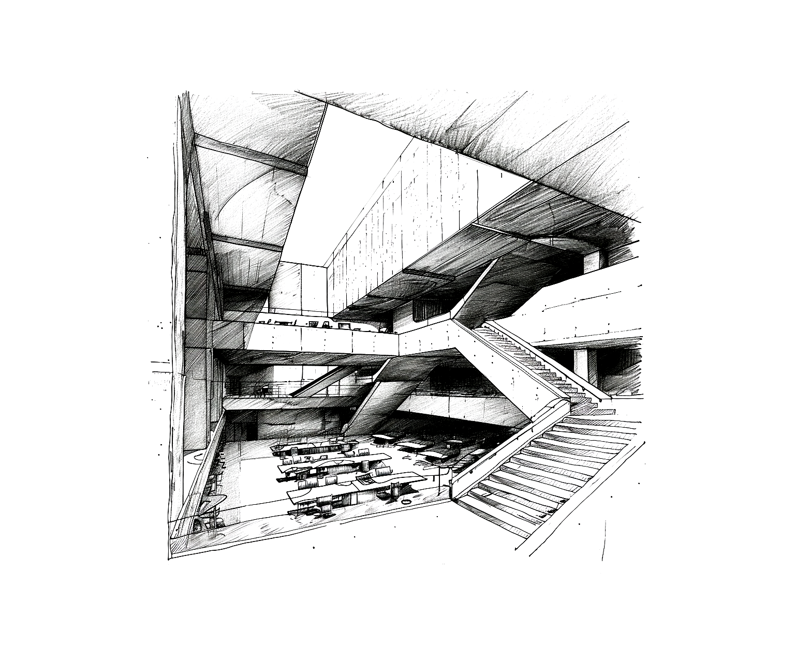

Förord
Välkommen till en fascinerande värld av affärer, strategi och personlig utveckling genom "Panoptikon". Detta spel är designat för att ge dig en unik inblick i företagsvärldens dynamik. Här får du möjlighet att ta del av de många olika roller och utmaningar som finns inom ett bolag, och samtidigt utveckla en djupare förståelse för dina kollegors arbete och perspektiv.
Vår ambition är att skapa en miljö som inte bara är underhållande, utan också lärorik. Genom att spela "Panoptikon" kommer du att få insikter i affärsstrategier, teamarbete, beslutsfattande och mycket mer. Det är en upplevelse som är både intellektuellt stimulerande och praktiskt tillämpbar i verkliga affärssammanhang.
Spelet är utformat för att uppmuntra samarbete, problemlösning och kreativt tänkande. Varje spelsession blir en resa genom de komplexa aspekterna av företagsledning och beslutsfattande. Det är vår förhoppning att denna resa inte bara ger dig en djupare förståelse för företagsvärlden, utan också ger dig värdefulla verktyg för personlig och professionell utveckling.
Tack för att du väljer att utforska och lära med "Panoptikon". Vi hoppas att din tid här blir så berikande som möjligt.
-- Mikael Ganehag Brorsson, januari 2024
Brev från VD
Kära anställda,
När jag reflekterar över vår resa tillsammans, är jag stolt över det vi har åstadkommit. Var och en av er har bidragit till vår framgång, och vår kollektiva insats har skapat något som är mycket mer än bara en affärsverksamhet. Vi är mer än siffror och kvartalsrapporter; vi är en familj, en gemenskap som strävar efter att göra skillnad.
Vår vision har alltid varit att vara mer än bara ett företag. Vi har strävat efter att vara en kraft för förändring, att påverka samhället, och varför vi ständigt söker nya sätt att innovera och förbättra.
Men vår resa har bara börjat. Framtiden bär med sig nya utmaningar och möjligheter. Vi står inför en tid av förändring, både inom vår bransch och i världen. Vårt företag är redo att möta dessa förändringar, att anpassa sig och växa.
Tillsammans har vi byggt en kultur av excellens, integritet och innovation. Denna kultur är kärnan i vår identitet, och den är vad som skiljer oss från mängden. Vi strävar efter att vara bäst, inte bara i det vi gör, men i hur vi gör det. Vår framgång är inte bara mätt i vinst, utan också i påverkan vi har på samhället och varandra.
När vi ser framåt, låt oss fortsätta att vara drivna av vår gemensamma vision och våra värderingar. Låt oss omfamna förändring med öppna armar och fortsätta att vara nyfikna, att lära oss och att växa. Vår resa tillsammans är långt ifrån över, och jag är övertygad om att det bästa ännu inte är skrivet.
Tack för allt ni gör, varje dag. Er dedikation och ert hårda arbete är det som gör vårt företag extraordinärt.
Med värme och uppskattning,
Isabella Leijonhufvud-Cederström
VD, Panoptikon
Introduktion
Välkommen till Panoptikon. I denna handbok hittar du alla regler som behövs för att navigera i spelets värld. Regelverket kan initialt kännas omfattande, men ingen anledning till oro. Vi har designat boken för att guida dig genom spelets olika aspekter på ett tydligt och stegvis sätt. Tveka inte att använda boken som en resurs under spelets gång för att snabbt slå upp regler eller klargöra detaljer. Med tiden kommer du att finna att spelupplevelsen blir mer flytande och intuitiv. Lycka till i din resa genom företagets korridorer och möten.

Vad är Panoptikon?
Panoptikon är en mystisk och multifacetterad organisation som du nu är en del av. Dess exakta verksamhet är inte tydligt definierad och omges av en aura av hemlighetsfullhet. Det är en plats där traditionella affärsstrategier blandas med okända mål och metoder. Som anställd kommer du att utforska dess komplexa och ibland oförutsägbara värld, där dina handlingar och beslut bidrar till dess fortgående berättelse och utveckling.
Vad är rollspel?
I detta spel är målet att gemensamt hantera både förväntade och oväntade situationer i det dagliga arbetet. Spelet fokuserar på samarbete, där spelarna tillsammans arbetar för att lösa utmaningar och problem. Det är inte en tävling mot varandra, utan en kamp mot omvärlden, med målet att främja lärande och förståelse för alla. Genom att navigera i spelets komplexa scenarier, stärker ni era färdigheter i problemlösning och strategiskt tänkande, samtidigt som ni upplever spänningen i att lösa problem innan de uppstår i verkligheten.
Spelare
Som spelare skapar och styr du en karaktär i spelets värld. Du beskriver dina karaktärers handlingar och reaktioner på de situationer som spelledaren presenterar. Användning av tärningar är ofta central för att bestämma utfallen av dina handlingar, speciellt i utmanande situationer. Genom att utveckla din karaktärs personlighet och bakgrund bidrar du aktivt till spelets berättelse. I samarbete med andra spelare utforskar du världen och tar dig an diverse utmaningar.
Spelledare
Som spelledare leder och formar du spelets berättelse och värld. Du beskriver miljöer, skapar scenarion och agerar som alla icke-spelarkaraktärer. Din roll innebär att upprätthålla spelvärldens regler och logik, samt att avgöra konsekvenserna av spelarnas handlingar. Som domare över regler och tärningsslag krävs det att du är flexibel och kan improvisera. Ditt huvudmål är att skapa en engagerande och underhållande upplevelse för alla deltagare.
Spela en session
I spelsession försöker spelet efterlikna en TV-serieepisod eller miniserie, med händelser som utspelar sig över en eller flera dagar. En session varar normalt mellan två till sex timmar. Under sessionen står du och dina medspelare inför ett huvudproblem som kräver omedelbar uppmärksamhet, samt sekundära mål och situationer.
Inte allt kan hanteras på en gång, och med tärningarnas slump, din egen skicklighet och karaktärens förmågor, arbetar ni för att uppnå era mål. Resultaten av era handlingar får konsekvenser, och även om ni pausar för vila, måste målen uppnås för att undvika reprimander.
Respektera gränser
I rollspel är det viktigt att respektera varandras gränser för att skapa en trygg och inkluderande upplevelse. Här är några tips:
- Kommunikation är nyckeln: Före spelet, diskutera vad som är okej och inte okej för varje spelare. Detta kan inkludera teman som våld, språkbruk eller personliga gränser.
- Aktiv lyssnande: Var uppmärksam på dina medspelares reaktioner. Om någon verkar obekväm, pausa och diskutera hur ni kan fortsätta på ett sätt som alla är bekväma med.
- Flexibilitet i berättandet: Var redo att ändra spelriktning om det blir nödvändigt för att respektera spelares gränser.
- Efter-spelet feedback: Efter spelet, ha en öppen diskussion där spelare kan uttrycka sina tankar och känslor om spelupplevelsen.
Kom ihåg, målet är att alla ska känna sig säkra och ha roligt!
Komma igång
- Bestäm vem som ska vara SL.
- Övriga spelare skapar sina rollpersoner.
Förkortningar
...
Tid
...
Grundsystem
Spelstruktur
Panoptikon är utformat som ett dynamiskt och öppet spel där rollpersonerna interagerar med varandra och miljön på ett flytande sätt. De kan prata, utforska olika platser, utföra handlingar och använda tärningskast för att lösa situationer och framsteg. Spelets natur är flexibel, och spelarna uppmuntras att samarbeta och använda sin kreativitet för att navigera i spelets värld och ta beslut som formar deras gemensamma berättelse.

Arbetsdagen
Arbetsdagen är den central kärnan i spelet och består av tre huvudsegment: arbete, återhämtning, och sömn. Dessa segment speglar en typisk dag i rollpersonernas liv och ger struktur åt spelarnas handlingar.
Arbete: Under arbetsfasen fokuserar spelarna på de uppgifter och utmaningar som deras rollpersoner står inför. Dessa aktiviteter kan vara långsiktiga och sträcka sig över flera arbetsdagar. Genom tärningskast avgörs framstegen i dessa uppgifter, vilket skapar möjligheter för spänning och utveckling.
Återhämtning: Efter arbetsdagen kommer en återhämtningstid där rollpersonerna får chansen att minska sin stress och återhämta energi. Under denna period kan spelarna välja aktiviteter som bidrar till deras karaktärers välbefinnande, men de kan också välja att arbeta övertid om situationen kräver det. Återhämtning är avgörande för att bibehålla en god mental hälsa och undvika stressrelaterade problem. Spelarna slår tärningar för att bestämma utfallet av sina återhämtningsaktiviteter. Ett misslyckat återhämtningsförsök kan leda till ökad stress. För den som föredrar att lämna saker åt slumpen, finns det möjlighet att använda "Slumpens nycker/Världens nycker"-tabellen, som innebär större risker men också potentiellt större belöningar.
Sömn: Sömnfasen är avgörande för rollpersonernas välbefinnande. Otillräcklig sömn resulterar automatiskt i ökad stress och minskad effektivitet nästa dag. Det är viktigt att spelarna hanterar sina karaktärers sömnbehov för att upprätthålla deras hälsa och förmåga att prestera.
Genom att balansera dessa tre segment – arbete, återhämtning, och sömn – skapar spelarna en rytm i spelet som efterliknar verkliga livets utmaningar och möjligheter.
Helgdagar
I grundversionen av "Panoptikon" existerar inte helgdagar för att förenkla spelupplevelsen. Detta innebär en kontinuerlig cykel av arbete, återhämtning och sömn. Men, för spelgrupper som önskar mer realism eller variation, kan helgdagar införas som en valfri mekanik.
Exempel på Helgdagsmekanik: Spelledaren kan bestämma att en viss dag är en helgdag, vilket ger rollpersonerna en paus från arbete. Under en helgdag kan spelarna fokusera på personlig utveckling, sociala aktiviteter, eller andra sidouppdrag som inte är relaterade till deras vanliga arbetsuppgifter. Helgdagar kan också användas för speciella händelser eller festligheter som kan leda till unika upplevelser eller karaktärsutveckling.
Slå tärning
I förståelsen av rollspelsvärlden är tärningsslag en central del. Föreställ dig en vanlig sexsidig tärning, känd som T6, som ger ett tal mellan 1 och 6. Det är den mest bekanta tärningen, ofta använd i allt från brädspel till rollspel. Åttasidiga tärningen, T8, lägger till mer variation med sina fler sidor. När dessa tärningar används i kombination eller enskilt, skapas en rikedom av möjligheter och utfall som definierar spännande ögonblick i spelet. Varje tärningskast bidrar till en unik vändning i äventyret.
Flera tärningar: I spelet innebär att slå t.ex. 2T8 att du kastar två åttasidiga tärningar. Efter kastet summerar du talen som visas på tärningarnas översidor för att få fram totalresultatet. Detta förfarande används ofta för att avgöra utfall av handlingar eller händelser i spelet.
Bedömningsbeslut
När du spelar kommer du att fatta flera viktiga beslut. Alla bidrar, men antingen spelarna eller spelledaren har slutgiltigt bestämmande över olika aspekter:
- Spelarna bestämmer vilka handlingar som är rimliga lösningar på ett problem.
- Spelarna identifierar och beslutar vilka moment i spelets berättelse som bidrar till deras karaktärers utveckling.
- Spelledaren avgör hur riskabelt och effektivt en given handling är i en viss situation.
- Spelledaren bestämmer vilka konsekvenser som återspeglar farorna och utmaningar i en given situation.
- Spelledaren avgör när en tärningskast krävs och vilken typ.
Handlingar
Grundegenskaper
Din Rollpersons förmåga att agera och påverka världen runtomkring styrs av sex grundläggande egenskaper. Dessa egenskaper varierar på en skala från 2 till 18, där ett högre värde indikerar en starkare eller mer utvecklad egenskap. Ett lägre värde representerar en svagare eller mindre framträdande egenskap.
Startvärden: För att fastställa varje av de sex grundläggande egenskaperna hos din Rollperson, börja med att slå fyra sexsidiga tärningar (4T6). Ta sedan bort både den högsta och den lägsta tärningen från varje kast. Summan av de återstående två tärningarna ger ett värde mellan 2 och 12. Placera detta värde på en valfri grundegenskap. Upprepa processen tills alla grundegenskaper har tilldelats värden. Efter att alla grundegenskaper har fått sina startvärden, får du fördela ytterligare 6 extra poäng över valfria grundegenskaper hur du önskar. Observera att du aldrig kan ha ett värde högre än 18 på någon grundegenskap.
- Styrka (STY): Styrka representerar rollpersonens fysiska kraft och förmåga att utföra uppgifter som kräver muskelkraft. Det inkluderar allt från att lyfta tunga föremål till att kämpa fysiskt. En hög Styrka är avgörande för karaktärer som förlitar sig på fysisk makt.
- Fysik (FYS): Fysik indikerar rollpersonens uthållighet, hälsa och allmänna fysiska kondition. Det påverkar deras förmåga att uthärda påfrestningar, motstå sjukdomar och återhämta sig från skador. Karaktärer med hög Fysik kan hantera fysiska påfrestningar bättre än andra.
- Smidighet (SMI): Smidighet handlar om rollpersonens handlag, reaktionstid och balans. Det är avgörande för aktiviteter som kräver finmotorik, snabba reflexer och förmågan att röra sig tyst eller undvika upptäckt. Höga värden i Smidighet gynnar karaktärer som behöver vara kvicka och lätta.
- Intelligens (INT): Intelligens avspeglar rollpersonens kognitiva förmågor, problemlösningsfärdigheter och allmänna kunskaper. Det är viktigt för uppgifter som kräver logiskt tänkande, lärande och förståelse av komplex information. Karaktärer med hög Intelligens är ofta bra på att analysera situationer och komma på kreativa lösningar.
- Psyke (PSY): Psyke representerar rollpersonens mentala styrka, viljestyrka och emotionella stabilitet. Det är viktigt för att hantera stress, motstå psykisk manipulation och behålla lugnet i utmanande situationer. En stark Psyke hjälper karaktärer att stå emot mentala påfrestningar och förbli fokuserade.
- Karisma (KAR):: Karisma är ett mått på rollpersonens charm, övertalningsförmåga och ledarskapsegenskaper. Det påverkar hur de interagerar med andra karaktärer och deras förmåga att påverka, övertyga eller manipulera. Karaktärer med hög Karisma är ofta skickliga på social interaktion och att skapa allianser.
Dessa egenskaper bildar grunden för rollpersonernas kapacitet och påverkar deras förmåga att lyckas med olika handlingar i spelet.
Utföra handlingar
När du vill att din rollperson ska utföra en handling, följ dessa steg:
- Deklarera handling: Som spelare, börja med att tydligt förklara vad du vill att din rollperson ska göra. Ange vilken av de sex (6) grundegenskaperna (Styrka, Fysik, Smidighet, Intelligens, Psyke, Karisma) du anser är mest relevant för handlingen.
- Spelledarens godkännande: Spelledaren bedömer och beslutar om handlingen är möjlig och lämplig i den aktuella situationen.
- Tärningskast: Som spelare, gör ett tärningskast för att avgöra utfallet av handlingen. Normalt använder du en T20.
- Justerar utfallet: Anpassa utfallet av tärningskastet baserat på eventuella effekter, såsom färdigheter, utrustning, eller situationsspecifika faktorer som påverkar handlingen.
- Tillämpa bonusar: Lägg till eventuella bonusar eller ytterligare kast som kan påverka handlingens resultat.
- Utvärdering av utfallet: Slutligen, tillsammans med spelledaren, utvärderar du resultatet av handlingen. Om du lyckas, beskriver spelledaren vad som händer. Vid misslyckande, diskuteras eventuella konsekvenser.
Välja egenskap för handling
När en rollperson ska utföra en handling, är det upp till dig som spelare att välja vilken av de sex (6) grundegenskaper som du anser bäst passar för situationen. Ditt val bör spegla hur din rollperson närmar sig problemet eller uppgiften. Därefter är det spelledarens ansvar att avgöra om ditt val är lämpligt för den aktuella situationen och hur det påverkar spelets fortskridande.
- Övertalning: Om du vill övertyga en karaktär, kan du välja att använda Karisma (KAR) för att framhäva din rollpersons charm och övertalningsförmåga. Alternativt, om din rollperson är särskilt stark (STY), kan du försöka använda denna styrka för att skapa en mer imponerande och skrämmande närvaro.
- Skriva ett viktigt brev: Om din rollperson behöver skriva ett viktigt brev, kan det vara lämpligt att använda Intelligens (INT) för att konstruera ett välformulerat och effektivt budskap. Att använda Karisma (KAR) för denna uppgift kan vara mindre effektivt, eftersom karisma oftast utövar större inflytande i personliga interaktioner snarare än i skriftlig kommunikation.
- Hissen är trasig: Om din rollperson står inför en trasig hiss och behöver ta sig upp till våning 15, finns det flera sätt att närma sig problemet. Du kan välja att använda Fysik (FYS) för att springa upp för trapporna. Detta skulle vara ett bra val om din rollperson har god kondition och uthållighet. Alternativt, om du vill undvika fysisk ansträngning, kan du använda Karisma (KAR) för att övertyga någon annan att hjälpa till, eller för att förklara och hantera situationen på ett effektivt sätt om du till exempel behöver förklara för en chef varför du är sen till ett möte.
Handlingskast
När din rollperson står inför en kritisk eller potentiellt riskfylld handling, är det dags att genomföra ett handlingskast. Denna typ av kast används för att avgöra utfallet av viktiga handlingar där utfallet inte är givet. Exempel på sådana situationer kan vara att försöka låsa upp en krånglig dörr, undvika upptäckt, eller att utföra en komplicerad uppgift under tidspress. För enklare handlingar, som att plocka upp något eller packa en väska, krävs inga handlingskast.
Alla handlingskast görs med en T20 (tjugo-sidig tärning).
Spelledarens bedömning
Det är spelledarens ansvar att avgöra när ett handlingskast är nödvändigt. Detta baseras på handlingens komplexitet och potentiella risker.
Bestämma utfallet
För att avgöra om ett handlingskast är lyckat, jämförs tärningens värde med den relevanta grundegenskapen för handlingen. Om värdet är lika med eller lägre än grundegenskapen, är handlingen framgångsrik.
Konsekvenser av misslyckande
Misslyckade kast innebär konsekvenser. Dessa konsekvenser varierar beroende på hur dåligt det gick. Ju högre över grundegenskapens värde tärningen visar, desto värre blir misslyckandet.
Tänk dig att din rollperson försöker smyga genom en hall med flera öppna dörrar. Spelaren behöver då göra ett handlingskast mot förslagsvis rollpersonens Smidighet (SMI), som i detta fall är tio (10).
- Om spelaren slår en sjua (7), lyckas rollpersonen smidigt ta sig igenom hallen utan att upptäckas.
- Om spelaren däremot slår arton (18), misslyckas rollpersonen grovt. Detta kan innebära att rollpersonen snubblar och gör oväsen, vilket drar till sig oönskad uppmärksamhet. Ett sådant misslyckande är allvarligare än om spelaren hade slagit en elva (11), vilket också hade varit ett misslyckande, men med mindre dramatiska konsekvenser.
Spektakulär framgång
När du slår en etta (1) på tärningen, har du uppnått en spektakulär framgång. Din rollpersons handling överträffar inte bara förväntningarna utan ger också oväntade och positiva resultat. Några exempel på vad detta kan innebära:
- Din rollperson upptäcker något extra utöver det de sökte.
- Deras insatser gör ett starkt intryck på alla i närheten.
- Uppgiften utförs inte bara framgångsrikt utan även på rekordtid.
Katastrofalt misslyckande
Om tärningskastet resulterar i tjugo (20) på en T20, innebär det ett katastrofalt misslyckande. I dessa fall misslyckas handlingen oavsett eventuella bonusar eller fördelar som din rollperson normalt skulle ha. Vid ett katastrofalt misslyckande är det inte möjligt att pressa ett kast. Några möjliga konsekvenser av ett sådant misslyckande är:
- Din rollperson orsakar skada på sig själv, andra, eller ett viktigt föremål.
- De skapar ett oerhört oväsen som kan dra till sig oönskad uppmärksamhet.
- Handlingen misslyckas så grundligt att det skapar ett hinder som förhindrar andra från att försöka utföra samma uppgift för en tid.
Endast ett försök
Som spelare ges du vanligtvis bara en möjlighet att utföra en specifik handling. Efter att tärningarna har rullats för en viss handling, är det inte tillåtet att göra ett nytt tärningsslag för att försöka nå samma mål igen. Istället krävs det att situationen förändras, att du använder en annan strategi eller att en annan rollperson gör ett försök, innan handlingen kan utföras på nytt. Det finns dock en undantagssituation där du kan få en andra chans genom att 'pressa ett kast'.
Pressa ett kast
Vid misslyckande av ett handlingskast kan du välja att pressa ditt kast. Detta betyder att du slår om kastet men tar +1 stress som resultat. Du kan endast pressa ett kast en gång per handling. Ett lyckat kast kan inte pressas för ett bättre resultat.
Fördelskast
När du gör ett kast med fördel, innebär detta att din rollperson har en ökad chans att lyckas tack vare gynnsamma omständigheter. För att utföra ett sådant kast:
- Slå den valda tärningen (vanligtvis 1T20) två gånger.
- Ta det värde som ger bäst utfall av de två kasten som resultatet av ditt handlingskast.
Ett kast med fördel kan till exempel tillämpas när din rollperson har tillgång till hjälpresurser, är särskilt väl förberedd, eller befinner sig i en situation där oddsen är till hens fördel.
Nackdelskast
Omständigheter som är ofördelaktiga eller utmanande för din rollperson kan resultera i ett kast med nackdel. Detta innebär en ökad risk för misslyckande. När du gör ett kast med nackdel:
- Slå den valda tärningen (vanligtvis 1T20) två gånger.
- Använd det värde som ger sämst utfall av de två kasten som resultatet av ditt handlingskast.
Kast med nackdel kan tillämpas i situationer där din rollperson är hindrad, under stress, eller när det finns andra faktorer som komplicerar handlingen.
Motståndskast
Under spelets gång kommer det att uppstå situationer där din rollperson utsätts för yttre påverkan eller utmaningar som kräver ett aktivt motstånd. Dessa situationer hanteras genom motståndskast, där du som spelare slår tärningar för att avgöra hur din rollperson klarar sig. Typen av egenskap som används beror på situationens natur.
Motståndskast fungerar precis som Handlingskast och slås även med en T20.
- Upptäcka dold ting: Om det finns något dolt eller oklart i rollpersonens omgivning, kan spelledaren be dig göra ett Intelligens (INT) slag för att se om din rollperson upptäcker eller förstår detta.
- Fysisk påverkan: Om din rollperson utsätts för fysisk stress, som att springa en lång sträcka, hålla balansen på en smal kant, eller uthärda extrema väderförhållanden, kan ett motståndskast med Fysik (FYS) krävas.
- Mentalt motstånd: I situationer där rollpersonen står inför psykisk press, som manipulation, hot, eller skrämmande omständigheter, kan ett slag med Psyke (PSY) vara nödvändigt. Detta avgör rollpersonens förmåga att bibehålla sitt lugn och sitt förnuft under press.
- Sociala utmaningar: När rollpersonen hamnar i sociala situationer där de behöver stå emot övertalning, lögner, eller charm, kan ett motståndskast med Karisma (KAR) behövas för att avgöra hur väl de kan hålla sig opåverkade och behålla sin egen övertygelse.
Spelledaren kan när som helst under spelets gång be spelarna att göra ett motståndskast mot en specifik eller flera av sina grundegenskaper. Det är vanligtvis bäst om spelledaren inte avslöjar syftet med kastet för spelarna. Särskilt om kastet inte leder till framgång. Syftet är att förhindrar spelarna från att spekulera eller försöka 'speloptimera' baserat på vad de tror att kastet gäller, särskilt om de känner till att någon tidigare misslyckats med en liknande handling.
Spelledarpersoners motståndskast
När din rollperson utför handlingar som syftar till att påverka Spelledarpersoner, krävs det att spelledaren gör ett motståndskast för att avgöra utfallet av din handling. Detta motståndskast baseras på samma grundegenskap som din rollperson använder för handlingen.
Din roll i spelvärlden
Din förmåga att välja rätt egenskap i olika situationer kommer att påverka din rollpersons framgång i spelet. Kom ihåg att kreativitet och flexibilitet ofta belönas, men att det också finns situationer där vissa egenskaper är mer logiska eller effektiva än andra. Som spelare är du en aktiv deltagare i att forma din rollpersons utveckling.
Inspiration
Om du som spelare agerar helt i linje med din karaktär eller har bidragit med en väldigt god idé, har kommit ihåg något väldigt viktigt eller liknande kan spelledaren välja att ge dig inspiration.
Inspiration kan användas endast en gång innan den är förbrukad och en spelare kan endast hålla en inspiration i taget. Inspiration kan användas till följande;
- Kast tärning på nytt utan att behöva pressa ett kast.
- Absorbera stress. Istället för att ta stress vid ett tillfälle oavsett hur många poäng stress det handlar om.
- Göra ett (1) poäng framsteg i en (1) Progressklocka utan att slå tärning för varken handling eller framstegspoäng.
Spelledarkaraktärers handlingar
Spelledarkaraktärers (SLK) handlingar hanteras på ett förenklat sätt jämfört med rollpersonerna. Dessa karaktärer utför vanligtvis sina handlingar utan tärningskast, där utfallet – lyckat eller misslyckat – bestäms av spelledaren baserat på berättelsens flöde och behov.
För att införa ett element av slump, kan spelledaren ibland välja att använda en T6 för spelledarkaraktärernas handlingar. Kastet görs i det dolda, och resultatet tolkas enligt följande tabell:
| T6 | Resultat |
|---|---|
| 1 | Karaktären utför handlingen framgångsrikt utan komplikationer. |
| 2 | Handlingen lyckas, men ett mindre hinder eller problem uppstår. |
| 3 | Handlingen utförs med nöd och näppe, vilket leder till ett större problem. |
| 4 | Handlingen misslyckas, men utan ytterligare konsekvenser. |
| 5 | Handlingen misslyckas och orsakar ett mindre problem. |
| 6 | Handlingen misslyckas fatalt och resulterar i ett större problem. |
Progresshantering
I spelet används en speciell mekanik, kallad "klockor", för att visualisera och spåra rollpersonernas framsteg i deras arbete. En klocka är en cirkel uppdelad i flera sektorer, där varje sektor representerar ett steg mot att slutföra en viss uppgift eller ett projekt. Den maximala storleken på en klocka är åtta (8) sektorer. För större projekt, där mer arbete krävs, kan flera klockor kopplas samman för att bilda en sekvens.
- Uppbyggnad: När din rollperson arbetar på en uppgift, fylls klockans sektorer för att visa framsteg. Varje syssla eller projekt kan ha sin egen klocka, med antalet sektorer varierande beroende på uppgiftens omfattning och komplexitet.
- Användning: Under varje arbetsperiod får rollpersonen chansen att bidra till en klocka genom att utföra relaterade aktiviteter. Ett lyckat handlingskast indikerar framsteg, och ett antal sektorer på klockan fylls i motsvarande rollpersonens framgångsgrad.
- Fullbordande: När alla sektorer i en klocka är ifyllda, anses uppgiften eller projektet vara slutfört. Detta kan leda till nya utvecklingar i spelet, belöningar för rollpersonen, eller upplåsning av ytterligare berättelseelement.
För mer omfattande projekt kan flera klockor kopplas samman. Varje enskild klocka representerar en del av projektet, och tillsammans bildar de en större helhet.
Projektklockor
Projektklockor används för att spåra framsteg i större och mer komplexa projekt. Dessa projekt kan omfatta flera steg eller faser, var och en representerad av en egen sysselklocka. Projektklockor består ofta av flera länkade klockor som tillsammans bildar en helhet, där varje enskild klocka representerar en distinkt del av det större arbetet.
Sysselklockor
Sysselklockor används för att spåra framsteg i mer rutinmässiga och vardagliga uppgifter. Dessa klockor består vanligtvis av upp emot åtta (8) sektorer och representerar arbete som kan slutföras inom en rimlig tid. Till skillnad från de mer omfattande projektklockorna, representerar en sysselklocka oftast en isolerad uppgift eller aktivitet.
Felstegsklockor
Felstegsklockor är ett verktyg för att hålla koll på misstag eller problem som uppstår under rollpersonernas utförande av uppgifter. Dessa klockor kan användas för att spåra antalet fel under kritiska moment, som en presentation, eller för att mäta hur länge det dröjer innan en motpart avslöjar rollpersonernas lögn. En fullbordad felstegsklocka kan indikera ett totalt misslyckande eller en betydande omvälvning i situationen.
Dualitetsklockor
Dualitetsklockor är en unik typ av klocka som visualiserar både framsteg och tillbakagång inom samma kontext. Liksom traditionella klockor fylls de på när framsteg görs i en syssla eller projekt. Det som skiljer Dualitetsklockor från andra är deras förmåga att även visa tillbakagång. När din rollperson stöter på motgångar, felsteg eller misslyckanden minskar framstegen i en dualitetsklocka.
Alternativa visualiseringar av klockor
Det är viktigt att varje spelare och spelledaren håller noggrann koll på sina klockor. Det finns flera sätt att visualisera dessa klockor, vilket ger flexibilitet i hur de kan hanteras och upplevas.
Handritade klockor är en pålitlig och den rekommenderade metoden för att spåra framsteg. De ger en tydlig och direkt visuell representation och tillåter omedelbar anpassning och uppdatering vid förändringar.
Tärningar som klockor
För de som föredrar en alternativ metod, kan klassiska rollspelstärningar som T4, T6, T8, T12 och T20 användas för att representera framsteg på klockorna. Varje tärning representerar en annan storlek av klocka, baserat på antalet sektorer.
- Tärningar för Dualitetsklockor: Användning av tärningar kan vara speciellt fördelaktigt för Dualitetsklockor. De möjliggör snabb och synlig justering av framsteg och tillbakagång.
- Observera Risker: En nackdel med att använda tärningar är att de kan förflytta sig om spelbordet stöts till eller om de råkar komma i vägen. Det är därför viktigt att säkra så att klockornas status inte oavsiktligt förändras.
Arbete
Arbetsdagen för rollpersonerna är strukturerad i fyra perioder, med två före lunch och två efter lunch. Under varje period kan din rollperson ägna sig åt en specifik syssla åt gången. En syssla kan innefatta ett brett spektrum av arbetsrelaterade aktiviteter, såsom:
- Möten: Delta i möten med andra rollpersoner eller spelledarkaraktärer för diskussion och samarbete.
- Forskningsarbete: Utforska och analysera information som är relevant för rollpersonens arbetsuppgifter.
- Projektarbete: Jobba på specifika projekt eller uppgifter som är centrala för rollpersonens yrkesroll.
Varje syssla kräver att din rollperson använder sina färdigheter och resurser på ett effektivt sätt för att uppnå framsteg och bidra till företagets mål.
Sysslor
Varje rollperson kan engagera sig i olika sysslor, dock endast en åt gången. En rollperson kan ha upp till fem (5) pågående sysslor parallellt, såvida inga speciella förmågor eller regler tillåter annorlunda.
Progressklockor och sysslor
Inte alla sysslor kräver användning av en progressklocka. Vissa uppgifter kan vara mer direkt och enkla, medan andra är mer komplexa och kräver noggrann uppföljning. Det är spelledarens ansvar att avgöra vilka sysslor som kräver en progressklocka för att visualisera och spåra framsteg. Denna bedömning görs baserat på sysslans natur och hur den passar in i spelets övergripande berättelse.
Arbetsomfångsbedömning
När en ny syssla blir din uppgift, inleds utvärderingen av dess omfattning med några viktiga frågor från Spelledaren. Dina svar på dessa frågor kommer att vara avgörande för att bestämma hur många T6 som behövs för att få en klar bild av utmaningens storlek.
- Vi börjar alltid med 1T6 för Lagen om alltings jävlighet -- en påminnelse om att oförutsedda omständigheter och svårigheter ofta lurar där vi minst anar dem.
-
Besitter du erforderliga kunskaper eller unika färdigheter för denna syssla?
- Nej: Lägg till 1T6.
-
Är uppgiften enkel och utan komplexa steg eller faser?
- Nej: Lägg till 1T6.
-
Är arbetsmiljön och omständigheterna gynnsamma (resurser, tid, stöd)?
- Nej: Lägg till 1T6.
-
Har du tidigare lyckats väl i liknande uppgifter?
- Ja: Du kan slå om 1T6.
-
Är det en gruppuppgift eller kan du ta nytta av någon annans förmåga?
- Ja: Du kan slå om 1T6.
Efter att ha besvarat frågorna och ackumulerat dina tärningar, är det dags för själva kastet. Här slår du alla dina T6:or och utför eventuella omslag som dina svar har gjort möjliga. Slutsumman av alla tärningar bestämmer sedan hur många segment som finns på progressklockan eller flera länkade progressklockor. Omslag kan ske ett efter det andra.
Oanad komplexitet
Om en syssla redan från början ska vara särskilt utmanande, har Spelledaren rätt att lägga till en extra dimension av komplexitet. Detta görs genom att slå 1T20, vars resultat läggs till som ytterligare segment till sysslans progressklocka. För uppgifter som är exceptionellt svåra, får Spelledaren utföra detta T20-kast med fördel.
Utförande av sysslor
När din rollperson tar sig an en syssla, utförs detta genom ett Handlingskast med en T20. Detta kast jämförs mot en relevant grundegenskap som korresponderar med sysslan. Det är spelarens och spelledarens gemensamma beslut att avgöra vilken grundegenskap som är lämplig för den specifika sysslan.
Spelledare: Gör ett nytt kast för att se hur väl du kommunicerar huvudpunkterna.
Spelare: (Kastar tärningen) Åh nej, 16. Tappar jag tråden?
Spelledare: Du blir osäker då de för dig okända blickarna runt bordet verkar borra sig in i din själ. Gör ett Psyke (PSY) kast.
Spelare: (Kastar tärningen) 4?
Spelledare: Ditt Psykevärde är 3 eftersom du redan har Mild belastning. Du misslyckas, och tar en T6 i stress på valfri grundegenskap.
Spelare: (Kastar tärningen) Aaaa nej, 4. Jag tar det på... Styrka (STY).
Spelledare: Presentationen är inte över, slå ett Handlingskast igen.
Framsteg och progressklockor
Om Handlingskastet är framgångsrikt, det vill säga lika med eller lägre än Tollpersonens värde i den valda grundegenskapen, görs framsteg i sysslan. Framsteg mäts med hjälp av en progressklocka, som fylls i beroende på resultatet av ett T6-kast:
| T6 | Framsteg på Progressklockan |
|---|---|
| 1 - 2 | Fyller en (1) sektor |
| 3 - 4 | Fyller två (2) sektorer |
| 5 - 6 | Fyller tre (3) sektorer |
Spelare: Jag vill jobba på min presentation och använder min Intelligens (INT) som är 15.
Spelledare: Bra, gör ett handlingskast.
Spelare: Jag fick en 14... så jag lyckas?
Spelledare: Ja, du lyckas. Kasta nu en T6 för att se hur mycket framsteg du gör på din progressklocka.
Spelare: (Kastar en T6) Jag fick en 4!
Spelledare: Perfekt, det betyder att du fyller i två sektorer på din progressklocka. Din presentation börjar ta form!
Spelare: Bra, jag vill fortsätta arbeta på detta under nästa period för att försöka slutföra det.
Spelledare: Låter bra, kom ihåg att du kan välja att använda olika grundegenskaper om du vill närma dig uppgiften på ett annat sätt.
Fika
Fika är en traditionell svensk paus som innefattar att ta en kort stund för avkoppling, ofta med kaffe och något litet att äta. I spelets kontext representerar Fika en stund för social samvaro och strategisk planering.
Fika utgör den oundvikliga period kring bordet när du interagerar med de andra spelarna i samtal och beslutar om tillvägagångsätt.
Samarbete
När du väljer att samarbeta med andra spelare för att effektivisera arbetet med en syssla eller en handling, tillämpas följande process:
- Initiera samarbetet: Bestäm vem som leder samarbetet. Denna rollperson koordinerar insatsen och blir ansvarig för det slutgiltiga kastet för framsteg.
- Utför handlingskast: Varje deltagande rollperson utför ett Handlingskast mot en lämplig grundegenskap. Syftet är att fastställa om de individuellt bidrar till samarbetet.
- Bestäm framsteg: Om minst en av deltagarna lyckas med sitt handlingskast, slår rollpersonen som leder samarbetet en T6 för att bestämma hur mycket progressklockan fylls i. Endast ett T6-kast görs oavsett antalet deltagare som lyckas. För sysslor som inte kräver en progressklocka, räcker det att minst en av deltagarna lyckas med sitt handlingskast för att sysslan ska anses genomförd.
- Ingen effekt av "Spektakulär framgång" eller "Katastrofalt misslyckande": När du deltar i ett samarbete, påverkas inte resultatet av eventuella "Spektakulär framgång" eller "Katastrofalt misslyckande". Detta gör samarbete till en taktisk fördel i kritiska situationer.
- Förbrukad möjlighet: Observera att alla som deltar i samarbetet förbrukar sin möjlighet att arbeta på den sysslan under den aktuella perioden. Du har dock fortfarande möjlighet att "Pressa ett kast" om du känner att det behövs.
Ett samarbete kan initieras vid vilken tidpunkt som helst under spelets gång. Oavsett om det sker vid starten av en syssla eller mitt i dess genomförande.
Syssloptimering
När din rollperson får en ny syssla, har du möjlighet att dra nytta av dina egna kunskaper om ämnet för att detaljerat beskriva hur din rollperson närmar sig och hanterar uppgiften. Genom att ge en noggrann och realistisk beskrivning av hur rollpersonen tacklar sysslan, kan du effektivisera arbetet som krävs för att slutföra uppgiften.
Denna detaljerade förklaring av förarbetet kan resultera i att spelledaren reducerar mängden arbete eller antalet sektorer i progressklockan som behöver fyllas i för att slutföra sysslan. Exakta minskningen beror på din beskrivning och hur väl den passar in i spelets kontext, och är därmed upp till spelledarens bedömning.
Störelsemoment
Spelledaren avgör om spelarnas diskussioner runt bordet passar inom ramen för spelets fika, lunch eller möte. Om spelardiskussioner blir långdragna eller om det uppstår meningsskiljaktigheter som fördröjer spelet, kan spelledaren besluta att nästa Handlingskast för alla inblandade spelare ska göras med nackdel.
Som spelare är det viktigt att du agerar i enlighet med din rollpersons svagheter. Spelledaren kommer att beakta detta när hen bedömer effekten av din rollpersons handlingar och interaktioner med andra rollpersoner.
Arbete utanför arbetstid
I spelvärlden råder strikta regler gällande arbetstider. Normalt är det inte tillåtet för rollpersoner att utföra arbetsuppgifter utanför de fastställda arbetstiderna. Detta återspeglar företagets policy för att upprätthålla en hälsosam balans mellan arbete och fritid, samt för att förebygga överarbete och stressrelaterade problem.
Spelledaren har dock möjligheten att göra undantag från denna regel och tillåta övertidsarbete. Beslutet att godkänna övertid kan tas när spelomständigheterna kräver det, eller när det tjänar spelets berättelse och rollpersonernas mål.
Stress och tillstånd
Rollpersonernas förmåga att stå emot mentala och emotionella påfrestningar hanteras genom en stressmätare. Denna mätare fylls på när rollpersonerna utsätts för svårigheter, utmaningar eller misslyckanden i spelets värld. Varje rollperson har en individuell förmåga att hantera stress, och deras stressmätare består vanligtvis av sex (6) nivåer.
Tillståndkast
När stressmätaren når sin topp och det sjätte nivået fylls, uppnår rollpersonen en kritisk stresspunkt. Då krävs ett slag med en T6 för att bestämma vilket tillstånd rollpersonen hamnar i:
| T6 | Tillstånd | Grundegenskap |
|---|---|---|
| 1 | Utmattad | Styrka(STY) |
| 2 | Krasslig | Fysik (FYS) |
| 3 | Omtäcknad | Smidighet (SMI) |
| 4 | Förvirrad | Intelligent (INT) |
| 5 | Rädd | Psyke (PSY) |
| 6 | Uppgiven | Karisma (KAR) |
Efter att tillståndet är fastställt, återställs stressmätaren till noll (0).
Tillståndsnivåer
Tillstånd som orsakas av hög stressnivå manifestera sig i två olika nivåer: Mild och Påtaglig. Varje nivå har en unik påverkan på din rollperson:
- Mild: När din rollperson befinner sig i ett "Milt" tillstånd, påverkas en specifik grundegenskap. Alla kast som involverar denna grundegenskap måste utföras till nackdel. Detta innebär att du slår två tärningar och använder det sämsta resultatet av de två.
- Påtaglig: Ett "Påtagligt" tillstånd är en allvarligare form av stresspåverkan. Här reduceras den berörda grundegenskapen direkt med sex (6) poäng. Detta representerar en betydande försämring av rollpersonens förmåga i situationer som kräver användning av den drabbade egenskapen.
Tillfälliga tillstånd
Din Rollpersoner kan även drabbas av tillfälliga tillstånd som påverkar dem på samma vis som långlivade tillstånd. Dessa tillstånd är kortvariga effekter som varar i några timmar och tenderar att försvinna av sig själva. Tillfälliga tillstånd kan utlösas av specifika händelser eller situationer och representerar korta perioder av emotionell eller fysisk påverkan. De kan vara allt från en tillfällig förlust av koncentration till en kort stund av ångest eller fysisk obehag.
- Hantering och botemedel: Tillfälliga tillstånd kan ofta hanteras eller botas genom spelarens agerande, såsom att använda specifika förmågor, genomföra vissa handlingar eller få hjälp från andra karaktärer. Till exempel kan en Rollperson som är temporärt rädd bli lugnad genom en annan Rollpersons karismatiska påverkan, eller en Rollperson som är temporärt förvirrad kan få hjälp att återfå sitt fokus genom en stunds vila.
- Automatisk återhämtning: Ett centralt drag hos dessa tillstånd är deras flyktighet. Oavsett om de behandlas eller inte, försvinner ett temporärt tillstånd alltid efter en sömnperiod. Det är värt att notera att denna återhämtning sker även om sömnperioden inte är helt ostörd eller fullständig, vilket understryker det tillfälliga och övergående naturen hos dessa tillstånd.
Tillfälliga tillstånd har endast Mild nivå.
Utarbetad
Rollpersoners förmåga att hantera stress är begränsad. När en rollperson vid ett tillståndskast får en ytterligare påverkan på en redan Påtagligt belastad grundegenskap, blir de överbelastade och måste omedelbart avbryta sitt arbete. Rollpersonen är då begränsad till endast att delta i spelets "Återhämtning" och "Sömn"-faser under en period. Under denna tid är rollpersonen praktiskt taget ur spel tills de återhämtat sig till den grad att endast ett (1) tillstånd återstår. Spelaren kan fortfarande interagera med de andra spelarna, men rollpersonens aktiva deltagande i spelet är starkt begränsat.
När din rollperson når en punkt av total utarbetning, är det dags för dig att konfrontera de djupare konsekvenserna av denna överbelastning. Detta görs genom att slå på Svaghetstabellen för att upptäcka vilken bestående svaghet som rollpersonen utvecklar på grund av den ihållande stressen och påfrestningen.
Svaghetstabellen
Svaghetstabellen används för att slumpmässigt bestämma vilken typ av svaghet rollpersonen har utvecklat. Varje svaghet har en direkt effekt på rollpersonens grundegenskaper och därmed på deras förmåga att utföra olika handlingar i spelet. För att slå på tabellen använder spelaren en T20.
| T20 | Svaghet | Effekt |
|---|---|---|
| 1 | Insomnia | Svårigheter med sömn leder till minskad mental klarhet och fokus. Under sömnfasen måste alla tärningskast ske med nackdel. |
| 2 | Kleptoman | En oemotståndlig drift att stjäla småsaker, vilket kan skapa komplicerade situationer. Du måste ta tillfället i akt när du ser något du kan "låna", även om det kan leda till problem. |
| 3 | Våghals | En stark benägenhet att ta risker utan att tänka på konsekvenserna. Du måste välja den mest riskfyllda vägen i situationer. |
| 4 | Våldsam | En tendens till att reagera med aggression och våld. När en situation kan lösas med Styrka (STY), är detta ditt enda val. |
| 5 | Lättjefull | En brist på motivation och initiativförmåga. Vilket reducerar effektiviteten hos din rollperson till endast två arbetsperioder per dag. |
| 6 | Hypokondriker | Ständig oro för hälsa och sjukdomar. Psykologisk stress påverkar din rollpersons Psyke (PSY), vilket gör alla psykebaserade kast måste utföras med nackdel. |
| 7 | Paranoid | En överdriven misstänksamhet gentemot andra. Du arbetar ensam och förlitar dig inte på andra. Detta förhindrar deltagande i grupparbeten och ingen får bistå dig i dina uppgifter eller Handlingar. |
| 8 | Melankolisk | En djupgående sorgsenhet som påverkar din rollpersons förmåga att engagera sig i aktiviteter. Innan varje hobbyaktivitet, måste du slå en T6; med ett resultat under fyra (4), är din rollperson för nedstämd för att delta. |
| 9 | Impulsiv | Svårigheter att kontrollera impulsiva tankar och handlingar. Den första idén som du kommer på måste genomföras utan möjlighet till eftertanke eller förändring. |
| 10 | Social fobi | En intensiv rädsla för sociala situationer. Detta förhindrar deltagande i gruppaktiviteter, speciellt när det kommer till hobbyer. |
| 11 | Osäker | Markant brist på självförtroende och självbild. Denna osäkerhet förhindrar att du utför soloaktiviteter i hobbyer. |
| 12 | Glömsk | Problem med korttidsminnet och svårigheter med att komma ihåg detaljer. Din Intelligens (INT) drabbas negativt med en minskning på -3. |
| 13 | Kortfattad | Svårighet att kommunicera och uttrycka sig klart. Alla slag som kräver Karisma (KAR) görs med nackdel. |
| 14 | Känslig | En stark reaktion på emotionella händelser och stimuli. Varje misslyckat försök att utföra en Handling leder till en (1) extra stress. |
| 15 | Förvirrad | Problem med att tänka klart och fatta välgrundade beslut. Alla Intelligens (INT)-baserade kast utförs med nackdel. |
| 16 | Rädd | En ökad benägenhet att känna rädsla och ångest. När någon i din närhet misslyckas med en Handling, påverkas du negativt och tar en extra stresspoäng. |
| 17 | Desorienterad | Svårigheter med att hålla fokus och orientera sig. Navigeringsförsök kräver ett Handlingsslag mot Intelligens (INT) för att säkerställa att du tar rätt väg och inte går vilse. |
| 18 | Svag | Fysisk svaghet och begränsad uthållighet. Alla Styrka (STY)-baserade kast utförs med nackdel. |
| 19 | Stel | Begränsad rörlighet och smidighet. Alla Smidighet (SMI)-baserade kast görs med nackdel. |
| 20 | Sjuklig | Du lider av konstanta hälsoproblem. Alla Fysik (FYS)-baserade kast görs med nackdel. |
Oväntad avgång
Döden inte ett vanligt inslag i spelupplevelsen. Istället finns det alternativa sätt att hantera situationer där rollpersoner står inför allvarliga utmaningar eller utmattning. När din rollperson når en punkt där de verkar vara utarbetade och återhämtning inte är möjlig på kort sikt, finns det två vägar att välja:
- Pension: Du kan välja att låta din rollperson gå i pension, vilket innebär att de lämnar spelets aktiva handling. Denna pensionering behöver inte vara permanent, och karaktären kan komma tillbaka vid en senare tidpunkt under passande omständigheter.
eller
- Terapi: Alternativt kan rollpersonen skickas till en av företagets specialterapier. Denna åtgärd öppnar upp möjligheten för karaktären att återhämta sig och återvända till spelet när tiden är rätt.
När någon av dessa situationer inträffar, har du som spelare möjlighet att skapa en ny rollperson. Denna nya karaktär introduceras i spelet på ett lämpligt och sammanhängande sätt, vilket ger en fräsch start.
Återhämtning
Återhämtning är en kritisk del av den dagliga rutinen i "Panoptikon". Efter en dag fylld med arbetsutmaningar behöver din rollperson tid för aktiviteter som är roliga, berikande eller avkopplande. Varje rollperson har ett utbud av hobbyer som de ägnar sig åt. Dessa hobbyer spelar en central roll i deras återhämtning och bidrar till att ge din rollperson djup och realism.
Under spelets gång kan din rollpersons intressen förändras. Hobbyer som en gång var en integrerad del av deras identitet kan förlora sin glans, medan nya intressen kan uppkomma och ge möjlighet till nya erfarenheter och utveckling.
Hobby
För att ge din rollpersoner ett rikt och balanserat liv, börja med att välja två hobbier som hen redan ägnar sig åt. Använd sedan en T20 för att slumpmässigt lägga till en tredje hobby. Skulle tärningsslaget visa en hobby som din rollperson redan har, fortsätt att slå tills en ny och unik hobby uppenbarar sig.
En rollperson kan endast ha tre (3) olika hobbyer samtidigt om inget annat anges.
Ska det vara någon form av bonus vid slag för hobby? En spelare med säg 5 i Intelligens (INT), som använder denna grundegenskap för Matlagning har endas 1/4 chans att lyckas med sitt Handlingskast. Detta gör att spelarna från början innan de tränat upp sina grundegenskaper har väldigt svårt att lyckas.
Hobbytabell
Grundegenskap: Denna kolumn visar vilka grundegenskaper som är relevanta för varje hobby. När din rollperson utför en hobbyaktivitet, väljer du en av dessa angivna egenskaper för att göra ditt tärningskast. Valet av grundegenskap reflekterar hur din rollperson närmar sig och utövar hobbyn.
| T20 | Hobby | Beskrivning | Grundegenskap |
|---|---|---|---|
| 1 | Matlagning | Du älskar att experimentera i köket, skapa läckra rätter och bakverk. | Intelligens (INT) / Fysik (FYS) |
| 2 | Trädgårdsarbete | Du finner lugn i att odla och sköta om växter, njuter av naturens skönhet. | Styrka (STY) / Psyke (PSY) |
| 3 | Yoga | Du söker inre frid och fysisk smidighet genom yoga och meditation. | Smidighet (SMI) / Psyke (PSY) |
| 4 | Teater | Du tar centrum på scenen utan manus, leder och svarar på scener med ren intuition och kvickhet. | Psyke (PSY) / Karisma (KAR) |
| 5 | Vandring | Du uppskattar äventyr i det fria, upptäcker nya platser till fots. | Fysik (FYS) / Psyke (PSY) |
| 6 | Musik | Du finner glädje och utmaning i att spela musik och behärska nya instrument. | Karisma (KAR) / Intelligens (INT) |
| 7 | Dans | Du uttrycker dig själv genom dans, rytm och rörelse är ditt språk. | Smidighet (SMI) / Fysik (FYS) |
| 8 | Skrivande | Du spinner samman ord till fascinerande berättelser och känslomässig poesi. | Psyke (PSY) / Intelligens (INT) |
| 9 | Simning | Du trivs bäst i vatten, simmar för att koppla av och hålla dig i form. | Fysik (FYS) / Styrka (STY) |
| 10 | Vinprovning | Du har en uppskattning för fina viner, utforskar och njuter av varje smaknyans. | Karisma (KAR) / Fysik (FYS) |
| 11 | Fribrottning | Du kombinerar din fysiska styrka med en imponerande närvaro i ringen. | Styrka (STY) / Karisma (KAR) |
| 12 | Cirkuskonster | Du trollbinder publiken med dina akrobatiska färdigheter och charm, från jonglering till trapetskonster. | Karisma (KAR) / Smidighet (SMI) |
| 13 | Pyssel | Du finner nöje i komplexa mönster och att skapa detaljerade figurer. | Smidighet (SMI) / Intelligens (INT) |
| 14 | Arkeolog | Du älskar fältarbete, att avkoda det förflutna och förena äventyr med historia | Styrka (STY) / Intelligens (INT) |
| 15 | Bergsklättring | Du har ett driv att bemästra branta klippor och komplexa rutter. | Styrka (STY) / Smidighet (SMI) |
| 16 | Schackspel | Du njuter av det strategiska spelet, alltid redo för en intellektuell duell på schackbrädet. | Intelligens (INT) |
| 17 | Fågelskådning | Du utforskar och uppskattar naturens mångfald, en passionerad fågelskådare. | Psyke (PSY) |
| 18 | Gör-det-själv | Du älskar att skapa och reparera saker själv, alltid med ett nytt projekt på gång. | Smidighet (SMI) |
| 19 | Scoutledare | Du inspirerar och vägleder du unga människor genom äventyr och lärande i naturen. | Karisma (KAR) |
| 20 | Löpning | Du utmanar dig själv med långa löpturer, där din fysiska uthållighet och mentala tålamod sätts på prov i varje lopp. | Fysik (FYS) |
Utförande
När din rollperson engagerar sig i en hobby, utförs detta genom ett T20 handlingskast, likt andra handlingskast i spelet. För att hobbyaktiviteten ska anses lyckad, ska resultatet av tärningskastet vara lika med eller lägre än rollpersonens värde i den relevanta grundegenskapen. Ett högre värde indikerar att aktiviteten misslyckats. Notera att det inte är möjligt att 'pressa ett kast' i samband med hobbyer.
- Om aktiviteten lyckas, kasta 1T6 för att avgöra hur många stresspoäng din rollperson återhämtar.
- Vid misslyckande, kasta 1T6, och ta hälften av värdet (avrundat uppåt) i ökad stress.
Beskriv gärna hur din rollperson utför sin hobby och vad som ledde till att aktiviteten blev lyckad eller misslyckad.
Spektakulär framgång
Ett kast på exakt ett (1) med T20 innebär en spektakulär framgång. I detta fall, kasta 2T6 och använd det högsta av de två resultaten för att bestämma stressåterhämtningen.
Katastrofalt misslyckande
Om tärningskastet resulterar i en tjugo (20), är det ett katastrofalt misslyckande. Denna händelse slår hårt mot din rollpersons moral. Kasta då 2T6 och använd det lägsta av de två resultaten som ökad stress.
Byte av hobby
Din rollpersons hobbyer är en integrerad del av deras karaktär och kan inte bytas ut av spelaren efter eget tycke. Byte eller förlust av en hobby kan endast ske genom specifika händelser i spelet. Om spelets händelser leder till att din rollperson förlorar intresset för en av sina hobbyer, ska denna hobby strykas från din rollpersons lista omedelbart. På samma sätt, om en händelse i spelet resulterar i att din rollperson får ett nytt intresse, får du välja en ny hobby för dem. Det är viktigt att din rollperson endast har tre hobbyer som mest om inget annat angets. Om en ny hobby tillkommer måste en gammal tas bort för att behålla balansen.
Slumpens nycker
| T20 | Hobby | Beskrivning | Grundegenskap | Effekt |
|---|---|---|---|---|
| 1 | Oväntat besök | En gammal vän hör plötsligt av sig och bjuder ut dig på middag. | Karisma (KAR) | Framgång: -1 stress, Motgång: +1 stress |
| 2 | Nattfotografering | En affish inspirerar dig till att utforska stjärnhimmeln. | Intelligens (INT) | ... |
| 3 | Extremsport | Du är osäker på det gick till men plötsligt står du där. | Smidighet (SMI) | ... |
| 4 | Frivilligarbete | Du spenderar kvällen för att hjälpa till på en lokal välgörenhetsorganisation. | Styrka (STY) | ... |
| 5 | Kvällsmuseum | Ett museum i trakten fångar ditt intresse. | Intelligens (INT) | ... |
| 6 | Gatufestival | En gatufestival äger rum i närheten och du känner dig manad att gå. | Psyke (PSY) | ... |
Tabell med 20 olika totalt slumpartade händelser. En tredjedel ska vara negativa, eller svåra - kopplade till specifika grundegenskaper medans andra är lättare. Detta val är högre riskt än kända hobbyer medans vinsten kan vara större.
Sömn
Sömn är en kritisk fas för din rollpersons stresshantering och återhämtning från olika tillstånd. Under sömnfasen kan du som spelare välja mellan att minska stress eller att arbeta på att återhämta dig från ett tillstånd. Observera att återhämtning från ett tillstånd är endast möjlig om stressnivån är noll (0) i den relevanta grundegenskapen.
Vanligtvis används en progressklocka med fyra sektorer för att spåra återhämtning från ett tillstånd.
Återhämtning från tillstånd
- Slå en T6. Om du får en sexa (6), gör ett (+1) framsteg i återhämtningen från ditt tillstånd i den aktuella grundegenskapen.
- Observera att om din rollperson ådrar sig mer än en (1) poäng stress, återställs allt framsteg i återhämtningen från tillståndet.
- Du kan bara arbeta på att återhämta dig från ett tillstånd åt gången. Om du byter fokus till ett annat tillstånd, nollställs dina tidigare framsteg.
Återhämtning från stress
- För att återhämta stress, gör ett Handlingskast baserat på din rollpersons Psyke (PSY).
- Ett lyckat kast minskar en (1) poäng stress, som kan fördelas på valfri grundegenskap.
Ofullständig sömn
Om din rollperson av någon anledning inte får en fullständig natts sömn, innebär detta en ökad stressbelastning. För varje fyra timmars period av utebliven sömn, tar din rollperson +1 stress.
Erfarenhet och utveckling
Varje Rollperson ackumulerar erfarenhet genom en erfarenhetsklocka. Denna klocka består av sex (6) sektorer och reflekterar Rollpersonens lärande och utveckling.
- När erfarenhetsklockan är helt fylld, erhåller Rollpersonen ett (1) erfarenhetspoäng.
- Efter att ett poäng erhållits, återställs klockan för fortsatt ackumulering av erfarenhet.
Händelser som bidrar till erfarenhet
Det primära sättet för Rollpersoner att samla erfarenhet är genom att framgångsrikt utföra sysslor. När en Rollperson slutför en fullständig progressklocka med åtta (8) sektorer, belönas de med en sektor på sin erfarenhetsklocka. Endast klockor som består av exakt åtta segment bidrar till erfarenhetsklockan. Sysslor som består av flera progressklockor kan därför ge flera segment på erfarenhetsklockan.
Andra händelser som också bidrar till att fylla Rollpersonens erfarenhetsklocka med en (1) sektor inkluderar:
- Katastrofalt misslyckande: När ett Handlingskast resulterar i ett katastrofalt misslyckande. Detta reflekterar lärandet från misstag och svårigheter. Genom våra misslyckanden lär vi oss och växer.
- Återhämtning från tillstånd: När din Rollperson återhämtar sig från ett tillstånd. Denna erfarenhet representerar den personliga styrkan och motståndskraften. Det som inte dödar oss, gör oss starkare.
- Inspiration: Om du har inspiration kan du välja att konvertera den till ett (1) framsteg på din Erfarenhetsklocka. Genom inspirationens gnista tänds kunskapens eld.
Erfarenhetspoäng
Varje rollperson tjänar Erfarenhetspoäng (EP) genom att spelaren agerar i linje med Rollpersonens unika personlighet och mål. Det är ditt ansvar som spelare att föra koll på de Erfarenhetspoäng du tjänar.
Efter varje spelsession har du möjlighet att använda dina ackumulerade erfarenhetspoäng för att utveckla din Rollperson. Du kan välja att:
- Förbättra grundegenskaper: Varje erfarenhetspoäng kan användas för att höja en valfri grundegenskap med ett (1) poäng.
- Skaffa nya färdigheter: Erfarenhetspoäng kan även användas för att ge din Rollperson nya färdigheter.
Förmågor
I följande avsnitts beskrivs ett antal färdigheter, deras kostnad att anskaffa or eventuella förutsättningar för att kunna anskaffa.
Förmågor ger din rollperson förbättrade förutsättningar att hantera situationer och utmaningar som hen ställs inför.
Krav och kostnad
Kravet för en färdighet specificerar de förutsättningar eller tidigare erfarenheter som behövs för att din rollperson ska kunna förvärva denna färdighet. Viktigt att notera är att om en färdighet som är ett krav för en annan färdighet tas bort vid ett senare skede, påverkar det inte rollpersonens förmåga att behålla eller använda den redan förvärvade färdigheten.
Kostnaden för en färdighet anges i antalet erfarenhetspoäng eller färdighetspoäng som krävs för att förvärva den. När du väljer att förvärva en färdighet, subtraheras motsvarande antal poäng från din rollpersons pool av erfarenhetspoäng. Kostnadens storlek reflekterar färdighetens värde och effekt i spelet, och du bör noggrant överväga vilka färdigheter som är mest fördelaktiga för din rollpersoner baserat på din spelstil.
Användning
Förmågor kan kategoriseras som antingen aktiva eller passiva. Passiva förmågor påverkar din rollperson kontinuerligt och automatiskt, utan att du behöver vidta några särskilda åtgärder. Dessa är integrerade i din rollpersons karaktär och agerar i bakgrunden.
Aktiva förmågor, å andra sidan, kräver att du aktivt meddelar spelledaren när och hur du vill använda dem. De är ofta kraftfullare och har en direkt påverkan på spelets gång, men deras användning är vanligtvis begränsad till ett visst antal gånger per dag.
Varje rollperson kan normalt ha upp till fem (5) olika förmågor samtidigt. Om du som spelare vill lägga till nya förmågor, kan det krävas att du avstår från andra, mindre prioriterade förmågor. I vissa fall kan det finnas möjligheter att ha fler än fem förmågor aktiva samtidigt, beroende på särskilda omständigheter eller bonusar som din rollperson kan ha erhållit under spelets gång. Det är viktigt att balansera och välja förmågorna noga för att skapa en mångsidig och effektiv rollperson.
Erfarenhetsförmågor
Erfarenhetsförmågor representerar den djupare förståelsen och färdigheterna som rollpersonerna förvärvar under sin tid i spelet. Dessa förmågor reflekterar inte bara tekniska kunskaper utan också personlig utveckling och insikter i karaktärens psyke och förhållningssätt. Genom att använda och förbättra dessa förmågor kan rollpersonerna öka sina chanser att lyckas i olika situationer och påverka spelets gång på ett meningsfullt sätt.
Affärsmästare
- Krav: -
- Kostnad: 1
När din rollperson deltar i samtal som berör pengar och ekonomi, likaså ekonomiska begrepp om du yttra "I denna ekonomin?", får du fördel för nästa Handlingskast som berör Karisma (KAR).
Antagonist
- Krav: -
- Kostnad: X
En gång per spelsession kan du introducera en utmanande hinder för en annan rollperson eller spelledarkaraktär. Detta kan innebära att komplicera ett pussel, göra ett Handlingskast betydligt svårare, eller andra liknande svårigheter. Det är upp till spelledaren att besluta om en lämplig komplikation. Om rollpersonen lyckas trots motgången får de fylla en sektor på sin erfarenhetsklocka.
Arbetsnarkoman
- Krav: -
- Kostnad: 1
När du aktiverar "Arbetsnarkoman", väljer din rollperson att avstå från sin vanliga hobby för dagen. Istället tillåts din rollperson att utföra två extra perioder av arbete under arbetsdagen.
Byråkrati
- Krav: -
- Kostnad: X
Din rollperson har utvecklat en mästerlig förståelse för regler, procedurer och det finstilta som styr företags eller organisationers arbetsflöden. Du är specialist på att påpeka allt som "tekniskt sett" är rätt. Den bästa formen av rätt. När du slår ett slag för att övertyga en annan individ i frågor som berör regler, procedurer och det finstilta gör du alla dina Handlingskast med en extra T6 för att tillfälligt höja din grundegenskap.
Déjà vu
- Krav: -
- Kostnad: X
Du har en märklig känsla av att ha upplevt vissa situationer förut. Detta ger dig möjlighet att en gång per dag göra om ett Handlingskast eller förvandla ett kast med nackdel till fördel, som om du hade förutsett utfallet.
Efterkonstruktion
- Krav: -
- Kostnad: X
Det är lätt att vara efterklok då denna förmåga ger din rollperson möjlighet att avslöja en händelse från det förflutna som påverkar den nuvarande situationen. Denna förmåga kan endast användas en gång per dag och kostar en (1) stress.
Extremarbete
- Krav: Arbetsnarkoman
- Kostnad: X
När "Extremarbete" aktiveras, avstår din rollperson från både hobby och sömn för en hel dygnscykel. Istället arbetar din rollperson nonstop, vilket innebär att du kan utföra upp till sex (6) extra arbetsperioder under den aktuella dagen. Ta 1T6 i stress.
Empati
- Krav: -
- Kostnad: X
En gång per dag kan du ge en annan spelare en extra T6 för att slå ett Psyke (PSY) slag.
Fasta
- Krav: -
- Kostnad: X
Vem behöver lunch när det finns en massa jobb att göra. Du behöver ingen lunch och kan istället utföra en extra syssla.
Främmande språk
-
Krav: -
-
Kostnad: 1 per språk
-
Universalspråket: Den första poängen du investerar i Främmande språk ger din rollperson kunskap i Universalspråket. Detta är ett allmänt erkänt språk som talas i flera olika länder, vilket underlättar kommunikationen i internationella och interkulturella sammanhang.
-
Ytterligare språkbehärskning: För varje ytterligare poäng du investerar, kan du välja ytterligare ett specifikt språk som din rollperson behärskar. Denna förmåga säkerställer smidig kommunikation på dessa språk, utan behovet av Handlingskast för att avgöra framgången av interaktionen.
-
Förlust av färdigheten: Om du beslutar att avlägsna Främmande språk från din rollpersons färdigheter, förlorar de även förmågan att kommunicera på Universalspråket och andra språk som förvärvats genom denna färdighet.
Genetisk modifiering
- Krav: -
- Kostnad: X
Med denna unika kapacitet kan du, en gång per dag, välja att byta värdena mellan två av dina grundegenskaper. Vid dagens slut återställs grundegenskapernas ursprungliga värden.
Gruppledare
- Krav: Ledarskap
- Kostnad: X
När du som Gruppledare aktivt deltar i ett Samarbete, får varje deltagande rollperson som lyckas med sitt handlingskast även slår 1T6. Bland alla T6-kast som utförs av gruppen, används det bästa resultatet för att fastställa det slutgiltiga utfallet av samarbetet.
Hämndlysten
- Krav: -
- Kostnad: 3
När din rollperson framgångsrikt genomför en handling för att ge igen mot någon som tidigare har skadat eller orsakat din rollperson någon form av skada, oavsett om det är fysiskt, emotionellt eller professionellt, fylls en sektor på erfarenhetsklockan.
Högre makt
- Krav: -
- Kostnad: X
I svåra situationer kan du söka vägledning från en högre makt -- Spelledaren. Genom att aktivera denna förmåga och ställa en fråga till Spelledaren, kan du få värdefull information. Slå 1T20, om värdet är ett (1) händer ingenting, annars tar du tre (3) poäng stress.
Instinkt
- Krav: -
- Kostnad: X
När det kommer till att bestämma vem som ska agera först, är det oftast din rollperson som tar initiativet. Denna färdighet innebär att du i de flesta situationer, oavsett om det handlar om en plötslig konfrontation, snabbt beslutsfattande eller att vara först med att reagera på en oväntad händelse, alltid är steget före.
Introjektion
- Krav: Projektion
- Kostnad: X
Din rollperson får tillfälligt tillgång till en färdighet från en annan rollperson som annars inte är tillgänglig för dem. Du kan använda Introjektion ett antal gånger per dag motsvarande din rollpersons Psyke (PSY) dividerat med 3, avrundat nedåt.
Katharsis
- Krav: Ventilera
- Kostnad: X
Du tömmer din stressmätare helt, men istället för att sprida din stress jämnt, tar varje annan spelare endast en (1) stresspoäng. Om din stress är lägre än antalet spelare tar övriga spelare fortfarande en (1) stress. Om handlingen sker under arbete förlorar du två (2) perioder, om den sker under hobby får du inte utöva hobbyn den dagen.
Kodknäckare
- Krav: -
- Kostnad: X
Du har en naturlig fallenhet för att lösa koder och pussel. Din förmåga att snabbt hitta mönster och lösningar är en tillgång i många utmaningar. Vid Handlingskast som berör pussel eller koder slår du en extra T6 för att tillfällight höja din Intelligens (INT).
Kognitiv dissonans
- Krav: -
- Kostnad: X
Du är skicklig på att hantera och balansera motsägelsefulla tankar och idéer. När du försöker övertala en Spelledarperson slår denna person sitt Motståndskast till nackdel.
Kontaktnät
- Krav: -
- Kostnad: X
Denna förmåga ger dig möjligheten att en gång per speltillfälle "kalla in en tjänst" från en Spelledarperson som du i stunden definierar tillsammans med spelledaren. Denna Spelledarperson kan vara vem som helst från en gammal kollega till en högt uppsatt exekutiv, en expert inom ett specifikt område eller kanske en person med unika resurser eller information. När du aktiverar denna förmåga, berättar du för spelledaren vem du kontaktar och varför, varefter spelledaren introducerar denna Spelledarperson och deras roll i världen.
Kurragömma
- Krav: -
- Kostnad: X
När din rollperson utför handlingar som kräver att hen gömmer sig, eller när det behövs utföra något i hemlighet, aktiverar du "Kurragömma". Vid dessa tillfällen slår du 1T6 för att temporärt öka en valfri grundegenskap som är relevant för handlingen.
Ledarskap
- Krav: -
- Kostnad: X
Du är en naturlig ledare och kan inspirera andra att utföra sitt bästa. En gång per dag kan du ge en annan rollperson förmågan att utföra ett Handlingskast med fördel.
Maskinskrivare
- Krav: -
- Kostnad: X
När din rollperson utför en handling som kräver skriftlig insats på maskin – oavsett om det är att skriva ett dokument, komponera ett e-mail, eller programmera – gör hen detta med en förbättrad precision och effektivitet. Som en "Maskinskrivare" utför du alla dina handlingskast som involverar maskinskrivning med fördel.
Metamorfos
- Krav: -
- Kostnad: X
En gång per spelsession kan du välja att temporärt förändra din rollperson till en annan Arketyp från listan. När du använder denna förmåga, väljer du en annan arketyp och får tillgång till dess unika förmåga under sessionen. Din rollperson återgår till sin ursprungliga arketyp vid sessionens slut.
Observatör
- Krav: -
- Kostnad: X
Din förmåga att iaktta och notera detaljer utan att dra uppmärksamhet till dig själv gör dig till en mästare på att samla information. När du insamlar information i det fördålda gör du detta till fördel om den valda grundegenskapen är (9) eller mindre inklusive eventuella bonus.
Projektledare
- Krav: Ledarskap
- Kostnad: X
Som projektledare har du förmågan att effektivt hantera och koordinera komplexa uppgifter. När du väljer att aktivera denna förmåga under ett möte – tar varje deltagare två (2) stresspoäng. Emellertid, som kompensation för denna ökade belastning, kommer varje deltagare sedan att ha fördelen av att slå alla sina Handlingskast med fördel för resten av arbetsdagen.
Projektion
- Krav: -
- Kostnad: X
Du kan tillfälligt överföra en av dina svagheter till en annan person, vilket påverkar deras nästa Handlingskast. När du använder Projektion, upplever målet din svaghet som om den vore deras egen. Notera att du fortfarande behåller svagheten själv; förmågan skapar endast en temporär kopia av svagheten hos målet. Du kan använda Projektion ett antal gånger per dag motsvarande din rollpersons Psyke (PSY) dividerat med 3, avrundat nedåt.
Protagonist
- Krav: -
- Kostnad: X
Denna förmåga ger dig möjlighet att en gång per dag förvandla ett misslyckat Handlingskast till en framgång.
Rokad
- Krav: -
- Kostnad: X
Denna färdighet demonstrerar din rollpersons mästerliga fingerfärdighet och snabbhet. Din rollperson har en enastående skicklighet att snabbt och obemärkt byta plats på två objekt. Denna förmåga är perfekt för situationer där ett diskret byte av föremål kan vara avgörande, till exempel att byta ut ett dokument mot ett annat eller ersätta en viktiga förmål med en kopia. Inget Handlingskast krävs vid användning av denna förmåga.
Scenmästare
- Krav: -
- Kostnad: X
När din rollperson använder "Scenmästare" under en presentation eller ett framträdande, utförs alla relevanta handlingskast som involverar kommunikation, övertygande eller underhållning med fördel.
Själens speglar
- Krav: -
- Kostnad: X
Du har en unik förmåga att läsa av andra människor och förstå deras sanna intentioner. Genom att ta en (1) stresspoäng kan du omedelbart avgöra om någon talar sanning.
Skamlös
- Krav: -
- Kostnad: X
Pinsamheter och sociala missöden påverkar dig inte. Du behåller ditt lugn och fokus även i situationer som skulle vara genanta för andra, vilket gör dig immun mot de vanliga sociala konsekvenserna av misstag.
Slagsmål
- Krav: -
- Kostnad: X
När orden tar slut börjar nävarna tala. När du använder Styrka (STY) för att göra skada på en annan individ slå då 1T6 för att tillfälligt öka grundegenskapen.
Stresstålig
- Krav: -
- Kostnad: X
Din förmåga att hantera stress är exceptionell. Du har en extra nivå i din stressmätare, vilket gör att du kan uthärda mer psykisk påfrestning än de flesta, vilket är en betydande fördel i högtryckssituationer.
Talförd
- Krav: -
- Kostnad: X
Du är en mästare på att övertyga och påverka andra med dina ord. En gång per dag kan du ge dig själv en fördel när du försöker övertyga någon.
Tekniskt fel
- Krav: -
- Kostnad: X
Du har en talang för att "råka" orsaka tekniska problem. När du försöker sabotera elektronik, kan du slå 1T6 för att tillfälligt öka en grundegenskap i ditt Handlingskast.
Tupplur
- Krav: -
- Kostnad: X
När du använder "Tupplur", tar din rollperson en kort paus från dagens aktiviteter för att vila och samla krafter. Du slår 1T6 för att se om tuppluren är särskilt återhämtande. Om du slår en etta (1) på tärningen, lyckas din rollperson med att fullt ut vila och reflektera under denna korta stund, vilket resulterar i att en sektor av stressklockan försvinner.
Universalgeni
- Krav: -
- Kostnad: Progressiv (1, 2, 3, ...)
För varje gång du investerar i "Universalgeni", ökar din rollpersons kapacitet att inneha och använda ytterligare en (1) färdighet. Det unika med denna förmåga är att den inte upptar någon plats i din färdighetslista. Kostnaden för att förvärva "Universalgeni" ökar progressivt för varje gång du väljer att utveckla den: första gången kostar 1 poäng, andra gången 2 poäng, tredje gången 3 poäng, och så vidare.
Uppfinna
- Krav: -
- Kostnad: X
När du som rollperson står inför en situation där du behöver konstruera något unikt eller improvisera en lösning genom att sätta samman olika delar, utförs ditt Handlingskast med fördel.
Ventilera
- Krav: -
- Kostnad: X
Du tömmer hela din stressmätare genom att fördela alla dina stresspoäng till andra spelare. Denna överföring av stress behöver inte vara jämnt fördelad, men alla poäng måste överföras.
Zenpalats
- Krav: Zenträdgård
- Kostnad: X
Med färdigheten "Zenpalats" har din rollperson uppnått en exceptionell nivå av inre frid och mental styrka. Detta fridfulla sinne gör att du hanterar stress på ett unikt sätt. "Zenpalats" fungerar likadant som "Zenträdgård" men du har även en extra T6 för att i stunden förbättra din rollpersons Psyke (PSY)-värde.
Zenträdgård
- Krav: -
- Kostnad: X
När din rollperson står inför risken att fylla den sista sektorn på sin stressklocka, ger "Zenträdgård" dig en chans att undvika stressens kumulativa effekter. Vid detta kritiska ögonblick slår du 1T20. Om resultatet är lika med eller lägre än din rollpersons Psyke (PSY)-värde, undviker du att ta den sista stressen och stressklockan förblir ofylld.
Övertygelse
- Krav: -
- Kostnad: X
Du har väldigt besluten i de ståndpunkter du har. När du slår ett Motståndslag för Psyke (PSY) eller Karisma (KAR) får du slå det med en extra T6 för att temporärt höja grundegenskapen.
Övernaturlig intuition
- Krav: -
- Kostnad: X
Du har utvecklat en sjätte sinne som varnar dig för faror och ovanliga situationer. Du litar på din intuition, vilket hjälper dig att undvika problem innan de inträffar. En gång per dag kan du pressa ett kast utan att ta stress, vilket reflekterar din förmåga att förlita dig på denna inre känsla i kritiska ögonblick.
Ödets nyck
- Krav: -
- Kostnad: X
Med denna förmåga kan du en gång per dag tvinga Spelledaren att slå om ett kast. Det spelar ingen roll om tärningskastet var gynnsamt eller ogynnsamt; du har kraften att ändra på det ögonblicket. Om Spelledaren har använt flera tärningar för ett kast, ger "Ödets nyck" dig ytterligare kontroll genom att låta dig välja exakt vilken tärning som ska kastas om.
Unika förmågor
Varje rollperson är begåvad med en unik uppsättning förmågor, intrikat kopplade till deras specifika Arketyp. Dessa förmågor ger varje rollperson en särskild fördel, som skapar möjligheter för framgångar i situationer där andra kanske aldrig hade kunnat triumfera.
Altruism
- Krav: Hjälten
- Kostnad: -
När en allierad rollperson misslyckas med ett Motståndskast och skulle få stress som ett resultat, kan Hjälten välja att ta på sig denna stress istället. Hjälten kan endast använda denna förmåga om det inte resulterar i att den egna stressmätare fylls helt.
Andas
- Krav: Förälskaren
- Kostnad: -
Med ett framgångsrikt Karisma (KAR) slag, kan Förälskaren genast lugna en upprörd person. Denna handling ger berörda Rollpersoner fördel i nästa Psyke (PSY) relaterat Handlingskast eller Motståndskast. Fördelen varar tills den används eller till nästa sömnperiod.
Ba dum tss
- Krav: Narren
- Kostnad: -
När denna förmåga aktiveras, berättar spelaren som styr Narren ett skämt. Om skämtet tas emot väl av gruppen (baserat på deras humör och reaktion), kan spelaren välja en rollperson, inklusive Narren själv, för att minska en (1) poäng stress som uppkommit under de senaste 5 minuterna. Misslyckas skämtet att landa väl, resulterar det i att Narren tar en (1) poäng stress.
Befriande ord
- Krav: Hjälparen
- Kostnad: -
Två gånger per dag kan Hjälparen neutralisera ett temporärt tillstånd hos en individ (Rollperson eller Spelledarkaraktär). Hjälparen måste utföra ett Handlingskast mot Intelligens (INT), men med nackdel. Vid framgång lyfts det temporära tillståndet omedelbart från den berörda individen.
Bemästrad manipulation
- Krav: Skurken
- Kostnad: -
Varje gång Skurken utför ett Handlingskast med Karisma (KAR) för att psykiskt påverka en Rollperson eller Spelledarkaraktär, tillkommer en extra tärning (T6) som specifikt används för att temporärt öka Skurkens Karisma-värde för det kastet.
Empatisk läsning
- Krav: Förälskaren
- Kostnad: -
Förälskaren kan en gång per dag utan Handlingskast identifiera känslotillstånd hos en individ (Rollperson eller Spelledarkaraktär). Vid ytterligare användning, krävs ett Handlingskast mot Psyke (PSY), där Förälskaren har kast till fördel.
Episkt handslag
- Krav: Hjälten
- Kostnad: -
När Hjälten väljer att visa sin respekt och erkännande gentemot en annan individ, vars Styrka (STY) är lika med eller större än Hjältens, kan de genomföra ett "Episkt handslag". Vid bådas nästa Handlingskast utförs dessa till fördel. Denna förmåga är kostnadsfri en gång per dag. Används den en andra gång samma dag, tar Hjälten två (2) stress.
Dominans
- Krav: Härskaren
- Kostnad: -
När Härskaren interagerar med Spelledarkaraktärer vars Psyke (PSY) är lägre än åtta (8) plus Härskarens poäng i förmågan "Universalgeni", utförs alla Handlingskast som involverar påverkan, övertalning eller kommando med fördel. Framgångsrik användning av denna förmåga belönar Härskaren med en sektor på sin erfarenhetsklocka.
God natt
- Krav: Hjälparen
- Kostnad: -
Hjälparen kan en gång varje dag använda "God natt" för att garantera djup och störningsfri sömn för sig själv eller en annan rollperson. Målet får fördel på alla kast under nästa sömnfas och är immun mot störningar eller negativa effekter under natten. Alternativt kan Hjälparen tvinga en Spelledarkaraktär att göra ett Motståndsslag för Psyke (PSY) - 6. Vid misslyckande somnar Spelledarkaraktären djupt i upp till 30 minuter om de inte störs.
Intimiderande närvaro
- Krav: Skurken
- Kostnad: -
Genom att ta två stress och sedan slå ett lyckat Handlingskast mot Intelligens (INT) eller Styrka (STR), kan Skurken framkalla det temporära tillståndet "Rädd" eller "Uppgiven" hos en individ.
Konsten att ifrågasätta
- Krav: Rebellen
- Kostnad: -
Rebellen kan en gång per dag använda sin kritiska tankeförmåga för att effektivisera en syssla. När de genomför ett lyckat Handlingskast mot Intelligens (INT) för en ny syssla, minskar de antalet nödvändiga segment för att slutföra sysslan med hälften av ett T6-resultat (avrundat nedåt).
Kreativ inspiration
- Krav: Skaparen
- Kostnad: -
Skaparen kan förstärka kreativiteten hos en grupp eller enskild individ genom ett Handlingskast mot Karisma (KAR). Om kastet är framgångsrikt, får alla berörda individer +1 till valfri grundegenskap vid sitt nästa Handlingskast för en syssla. För varje syssla som framgångsrikt avslutas med hjälp av denna ökade kreativitet, belönas Skaparen med en sektor på sin erfarenhetsklocka. Om det ursprungliga Handlingskastet mot Karisma (KAR) misslyckas, tar Skaparen +1 stress.
Kunskapsöverföring
- Krav: Mentorn
- Kostnad: -
En gång per dag kan Mentorn dela med dig av sin visdom till en annan rollperson för att temporärt öka deras Intelligens (INT) under resten av dagen. Mentorns Intelligens (INT) ersätter rollpersonens värde.
Lätt som en plätt
- Krav: Oskuldens
- Kostnad: -
När Oskulden antingen blir tilldelad en syssla eller tar på sig rollen som ansvarig för en gruppsyssla, ges de möjlighet att använda sin unika syn på världen för att påverka arbetsomfånget. De kan göra detta genom att slå 1T6. Utfallet av detta slag bestämmer hur många segment som justeras på sysslans progressklocka. Om Oskulden slår en 6:a, ökar det arbetsomfånget med 6 segment, vilket speglar en överoptimistisk bedömning av situationen. Om tärningen visar 1 till 5, minskar antalet segment på progressklockan med motsvarande värde.
Nyfiken
- Krav: Utforskaren
- Kostnad: -
När Utforskaren befinner sig i en ny eller okänd miljö, utförs alla Handlingskast relaterade till utforskning, undersökning eller lärande av denna miljö med fördel. Detta gäller inte situationer där Utforskaren redan är väl förtrogen med omgivningen.
Omvänd realitet
- Krav: Magikern
- Kostnad: -
Två gånger per dag kan Magikern välja att aktivera "Omvänd realitet" på ett Handlingskast utfört av sig själv eller en annan rollperson. När denna förmåga används, blir kastets framgångskriterier omvända -- det vill säga, ett resultat som normalt skulle betraktas som ett misslyckande (en siffra högre än rollpersonens grundegenskap) blir istället ett framgångsrikt utfall.
Pappaskämt
- Krav: Narren
- Kostnad: -
Varje gång spelaren som styr Narren framför ett skämt i spelet, oavsett kontext, har de möjlighet att göra ett Handlingskast mot Karisma (KAR). Vid lyckat kast belönas Narren enligt följande: Vid första framgångsrika användningen under en spelsession, fyller Narren i en sektor på sin erfarenhetsklocka. Vid ytterligare framgångar med "Pappaskämt" under samma session, får Narren -1 stress istället.
Riskabel insikt
- Krav: Rebellen
- Kostnad: -
Rebellen har möjligheten att slå alla Handlingskast som involverar tankeprocesser, planering eller kreativa lösningar med fördel. Men, för varje kast som resulterar i ett misslyckande, tar Rebellen +1 stress.
Skaparglädje
- Krav: Skaparen
- Kostnad: -
När Skaparen arbetar med en syssla som kräver betydande insats, motsvarande tio (10) eller fler sektorer på en progressklocka, utför de alla relevanta Handlingskast med fördel. Men, när de närmar sig slutförandet av projektet, specifikt under arbetet med de sista tre (3) sektorerna, växer pressen och för varje arbetspass där Skaparen bidrar till sysslan utan att färdigställa den, fås +1 stress.
Strategisk plan
- Krav: Härskaren
- Kostnad: -
Härskaren har förmågan att noggrant utforma en detaljerad plan, bestående av en serie genomförbara steg. Spelaren presenterar planen, som en lista över specifika åtgärder och deras tänkta ordningsföljd. Alla individer som aktivt deltar i genomförandet av planen får utföra sina nästa relevanta Handlingskast med fördel, förutsatt att de följer planens steg och dessa steg lyckas. Om något steg i planen misslyckas, anses hela planen falla. Härskaren kan endast upprätthålla en aktiv plan åt gången.
Ständiga optimisten
- Krav: Oskuldens
- Kostnad: -
Oskuldens optimism kan en gång per dag minska stress hos sig eller en medspelare. Slå 1T20, om värdet är mer än din Intelligens (INT) minskar du -1 stress.
Subliminärt flöde
- Krav: Magikern
- Kostnad: -
En gång per dag kan Magikern ta +2 stress och aktivera "Subliminärt flöde" på sig själv eller en annan individ under en arbetsperiod. Vid framgångsrikta Handlingskast i sysslor som utförs av individen, fördubblas framstegen på den tillhörande progressklockan fram till dagens slut.
Tunna röda ledtråden
- Krav: Utforskaren
- Kostnad: -
Utforskaren har en naturlig fallenhet för att lösa gåtor och pussel. En gång per dag kan Utforskaren be spelledaren om en ledtråd eller vägledning i en utmanande situation, som ett pussel eller en komplex problemställning. För detta tar Utforskaren +2 stress.
Vägledning
- Krav: Mentorn
- Kostnad: -
Mentorn kan välja att slå sitt nästa Handlingskast med nackdel för att istället ge en annan individ fördel i deras nästa Handlingskast. Varje gång denna vägledning leder till ett positivt utfall, belönas Mentorn med en sektor på sin erfarenhetsklocka.
Din rollperson
Du har friheten att skapa en rollperson som verkligen speglar din fantasi och kreativitet. Här finns inga traditionella gränser för vad din karaktär kan vara. Oavsett kön, bakgrund, eller personlighetstyp, kan din rollperson representera en mängd olika identiteter och egenskaper. Denna öppenhet uppmuntrar till utforskande av olika perspektiv och ger dig möjligheten att gestalta en karaktär som ligger utanför vanliga stereotyper eller begränsningar.

Genom att gestalta en rollperson som är helt skild från dig själv, får du en chans att se världen ur ett helt nytt perspektiv.
Rollformulär: Detta är som din karaktärs identitetshandling. Det är här du dokumenterar all viktig information om din rollperson -- från grundläggande detaljer som namn och bakgrund till specifika färdigheter och egenskaper. Tänk på formuläret som en levande dokumentation av din karaktärs resa och utveckling. Under spelets gång kommer du att fylla i och uppdatera detta formulär, vilket hjälper dig att hålla koll på din karaktärs framsteg och förändringar.
Utseende
Utseendet på din rollperson är mer än bara ett yttre attribut; det är ett uttryck för deras identitet och historik. Det kan spegla deras bakgrund, livsstil, erfarenheter och till och med deras personlighet. När du väljer ditt utseende från vår T20-tabell, tänk på hur dessa fysiska drag kan berika din rollpersons berättelse och hur de uppfattas i spelets värld.
| T20 | Utseende | T20 | Utseende |
|---|---|---|---|
| 1 | Skarpa ögon | 11 | Vältrimmad skäggstubb |
| 2 | Ett ärr över kinden | 12 | Karakteristisk frisyr |
| 3 | Ovanligt långt hår | 13 | Atletisk byggnad |
| 4 | Distinkt tatuering | 14 | Tunnhårig |
| 5 | Imponerande höjd | 15 | Kraftiga händer |
| 6 | Strålande leende | 16 | Distinkt röst |
| 7 | Mycket blek hy | 17 | Vacker näsa |
| 8 | Hårig | 18 | Ovanligt liten statur |
| 9 | Ovanlig ögonfärg | 19 | Buskiga ögonbryn |
| 10 | Naturligt lockigt hår | 20 | Särskilt anmärkningsvärda öron |
Språk
Effektiv kommunikation är central för samarbetet och de dagliga operationerna inom spelvärlden. Språket som talas i varje region av spelets värld underlättar intern kommunikation och samverkan.
Lokalt
Det lokala språket varierar beroende på spelets geografiska placering. I varje region av "Panoptikons" värld har rollpersonerna kunskap i regionens dominerande språk som en grundläggande del av deras kommunikationsförmåga.
Externt
Kommunikation med personer utanför din region kräver ofta kunskap i andra språk. Här blir färdigheten Främmande språk avgörande för framgångsrik interaktion. Genom att investera poäng i denna färdighet kan din rollperson lära sig ytterligare språk, vilket breddar dess förmåga att kommunicera effektivt i en internationell miljö.
Du kan alltid försöka kommunicera på andra språk genom att göra ett Handlingskast, men detta är osäkert och beror på tur och improvisation.
Språktabell
Denna tabell representerar en lista över språk i "Panoptikon". Var och en med en unik kulturell och språklig blandning som speglar världens mångfald.
| Språk | Beskrivning |
|---|---|
| Solantica | En fusion av de latinska och romanska språken, präglad av poetisk skönhet. |
| Nordhymia | Ett robust språk med rötter i vikingarnas kultur, spridit över norra klotet. |
| Dravidiska | Djupa rötter i sydligaste delen av världen, fylld av mystik och magiska konster. |
| Meridiane | En mosaik av afrikanska, arabiska och swahili-influenser, rik på handel och vishet. |
| Paciforia | Språket av hav och öar, en harmoni av maori, filippinska och andra öspråk. |
| Aurorasia | En symfoni av språk från Fjärran Östern, känd för sin sofistikering och visdom. |
Arketyper
Varje Arketyp i erbjuder en unik uppsättning av grundfärdigheter, styrkor och förutsättningar som ger liv åt din rollperson. Utforska de olika arketyperna för att hitta den som bäst passar din spelstil och som bidrar till en berikande upplevelse. Du kan också låta tärningen bestämma genom att slå 1T12 och följa tabellen nedan.
| T12 | Arketyp | T12 | Arketyp |
|---|---|---|---|
| 1 | Hjälten | 7 | Skaparen |
| 2 | Oskulden | 8 | Härskaren |
| 3 | Utforskaren | 9 | Magikern |
| 4 | Mentorn | 10 | Hjälparen |
| 5 | Rebellen | 11 | Förälskaren |
| 6 | Narren | 12 | Skurken |
Hjälten
Hjälten är en modig och målmedveten karaktär som aldrig ryggar för en utmaning. De är karismatiska ledare och drivna av en stark vilja att förändra världen till det bättre. Hjälten är en naturlig förebild och inspiratör, som använder sin kraft och sitt mod för att övervinna hinder och leda andra mot framgång.
- Styrka (STY): +1
- Psyke (PSY): -2
- Unika förmågor: Altruism, Episkt handslag
Oskulden
Oskulden är en optimistisk och ärlig arketype som strävar efter att se det bästa i människor och situationer. De är ofta naiva men deras renhjärtade och uppriktiga natur vinner ofta andra människors förtroende och sympati.
- Psyke (PSY): +1
- Intelligens (INT): -2
- Unika förmågor: Lätt som en plätt, Ständiga optimisten
Utforskaren
Utforskaren är en äventyrlig och självständig karaktär som alltid söker nya erfarenheter och kunskap. De är inte rädda för att bryta nya vägar och deras nyfikenhet och öppenhet för nya idéer gör dem till ovärderliga tillgångar i alla situationer där innovation och kreativitet är avgörande.
- Smidighet (SMI): +1
- Intelligens (INT): -2
- Unika förmågor: Nyfiken, Tunna röda ledtråden
Mentorn
Mentorn är en tänkare, känd för sin visdom och insikt. Denna arketyp har ofta rollen som strateg eller rådgivare. De är analytiska, kunskapstörstande och motiverade av en längtan att förstå världen och dela med sig av sin lärdom. De hjälper andra att se saker ur nya perspektiv och är ovärderliga i situationer som kräver eftertanke och planering.
- Intelligens (INT): +3
- Fysik (FYS): -2
- Styrka (STY): -2
- Smidighet (SMI): -2
- Unika förmågor: Kunskapsöverföring, Vägledning
Rebellen
Rebellen utmanar status quo och är en mästare på att tänka utanför ramarna. De ifrågasätter etablerade normer och presenterar radikala nya idéer. De är orädda och innovativa, och deras förmåga att tänka annorlunda kan leda till banbrytande förändringar och lösningar på svåra problem.
- Karisma (KAR): +1
- Psyke (PSY): +1
- Fysik (FYS): -4
- Unika förmågor: Konsten att ifrågasätta, Riskabel insikt
Narren
Narren är känd för sin humor och förmåga att se livets ljusa sida. Denna arketype använder sin kvickhet och charm för att lättare hantera stressiga situationer och hålla stämningen uppe. De är sociala och ofta hjärtat i varje team, vilket hjälper till att lätta på trycket i krävande arbetsmiljöer.
- Psyke (PSY): +1
- Styrka (STY): -2
- Unika förmågor: Ba dum tss, Pappaskämt
Skaparen
Skaparen är en kreativ kraft, driven av behovet att uttrycka sig och skapa något meningsfullt. Det är de som förnyar, uppfinner och skapar. Deras kreativitet är nyckeln till innovation och problemlösning, och de är ofta de som leder vägen i utvecklings- och designprojekt.
- Intelligens (INT): +2
- Styrka (STY): -2
- Karisma (KAR): -2
- Unika förmågor: Kreativ inspiration, Skaparglädje
Härskaren
Härskaren är en ledare som utstrålar auktoritet och förtroende. Med en stark tro på sin förmåga att bringa ordning och effektivitet, styr de med en fast hand och har en naturlig benägenhet att ta kommandot i alla situationer. Makthavaren är inte bara stabil och målinriktad, utan strävar också efter att uppnå förträfflighet i allt de gör och förväntar sig att andra följer deras exempel och ledning.
- Karisma (KAR): +2
- Intelligens (INT): -4
- Unika förmågor: Dominans, Strategisk plan
Magikern
Magikern är en transformerande kraft, som använder sin kunskap för att skapa förändring. De är experter på att tänka på nya sätt och använda sin kreativa energi för att omsätta idéer till verklighet. De är lösningssökare som kan vända problem till möjligheter och har en nästan magisk förmåga att se möjligheter där andra ser hinder.
- Intelligens (INT): +1
- Psyke (PSY): +1
- Karisma (KAR): -2
- Styrka (STY): -2
- Unika förmågor: Omvänd realitet, Subliminärt flöde
Hjälparen
Hjälparen är den stödjande och omtänksamma. De står ofta bakom sina kollegor, ger stöd och uppmuntran. De är empatiska och omtänksamma, och deras förmåga att förstå andra människors behov gör dem till ovärderliga medlemmar i alla team.
- Psyke (PSY): +2
- Karisma (KAR): +1
- Styrka (PSY): -3
- Fysik (FYS): -2
- Smidighet (SMI): -1
- Unika förmågor: Befriande ord, God natt
Förälskaren
Förälskaren är driven av passion, känslor och relationer. De utmärker sig genom sin förmåga att skapa starka band och inspirera andra. De är karismatiska och lockar till sig andra med sin energi och entusiasm, vilket gör dem till utmärkta nätverkare och kommunikatörer.
- Karisma (KAR): +3
- Intelligens (INT): -5
- Styrka (STY): -1
- Unika förmågor: Andas, Empatisk läsning
Skurken
Skurken är en mästare på manipulation och maktspel. De är strategiska tänkare som ofta agerar bakom kulisserna för att främja sina egna syften. Skickliga i att utnyttja situationer och människor till sin fördel, utmärker de sig genom att alltid ligga ett steg före och ha en plan för allt. Deras styrka ligger i förmågan att se och utnyttja systemets och individernas svagheter.
- Intelligens (INT): +2
- Psyke (PSY): +1
- Karisma (KAR): -2
- Smidighet (SMI): -2
- Styrka (STY): -2
- Unika förmågor: Bemästrad manipulation, Intimiderande närvaro
Namn
Namnet på din rollperson är mer än bara en etikett -- det är en del av deras identitet och berättar en historia om vem de är. I spelvärlden är ett namn en spegling av din rollpersons bakgrund, kulturella arv och deras individuella egenskaper. När du väljer ett namn till din rollperson, överväg hur det passar in i den värld de lever i och hur det kan påverka deras interaktioner med andra karaktärer.
- Personligt och unikt: Välj ett namn som känns personligt och betydelsefullt för din rollperson. Det kan reflektera deras personlighet, ursprung eller till och med deras livshistoria.
- Kulturell kontext: Tänk på den kulturella eller geografiska bakgrunden din rollperson kommer ifrån. Detta kan påverka typen av namn de skulle ha.
- Betydelse och symbolik: Vissa namn bär med sig specifika betydelser eller associationer. Överväg om dessa element är relevanta för din rollpersons karaktär och berättelse.
- Uttal och skrivning: Tänk på hur namnet uttalas och skrivs. Ett lättuttalat och minnesvärt namn kan underlätta för andra spelare och spelledaren.
Namnförslag
Din karaktärs identitet en central del av spelupplevelsen. För att hjälpa dig presenterar vi här två tabeller med förslag på förnamn och efternamn. Dessa namn är utvalda för att passa spelets atmosfär och ge varje karaktär en distinkt personlighet.
Förnamn
Förnamnen har valts för att återspegla en mångfald av kulturer och epoker, samtidigt som de bibehåller en känsla av det unika och ovanliga. Varje förnamn är kopplat till en T20-tärning, vilket gör det enkelt för dig att slumpmässigt välja ett namn eller att välja ett som du känner passar din karaktärs koncept.
| T20 | Förnamn | T20 | Förnamn | T20 | Förnamn | T20 | Förnamn |
|---|---|---|---|---|---|---|---|
| 1 | Ada | 6 | Flora | 11 | Hamse | 16 | Nathanel |
| 2 | Belle | 7 | Gunde | 12 | Igor | 17 | Olli |
| 3 | Caspian | 8 | Lunabelle | 13 | Jani | 18 | Povel |
| 4 | Disa | 9 | Vigdis | 14 | Karsten | 19 | Ragnvald |
| 5 | Ebbe | 10 | Ziggy | 15 | Maddox | 20 | Sigge |
Efternamn
Efternamnen är designade för att komplettera förnamnen och lägga till ytterligare djup och bakgrund till karaktärerna. Dessa namn är inspirerade av nordisk mytologi, naturfenomen och historiska referenser, vilket skapar en känsla av en rik och detaljerad värld.
| T20 | Efternamn | T20 | Efternamn | T20 | Efternamn | T20 | Efternamn |
|---|---|---|---|---|---|---|---|
| 1 | Eldhjärta | 6 | Iskall | 11 | Sjösten | 16 | Strandberg |
| 2 | Fjällbrant | 7 | Ljungmark | 12 | Skogvaktare | 17 | Tungsten |
| 3 | Frostgård | 8 | Mörkström | 13 | Solhjelm | 18 | Varglund |
| 4 | Gryningsson | 9 | Nattbacka | 14 | Stjärnfall | 19 | Vinterstorm |
| 5 | Havsdal | 10 | Silversköld | 15 | Stormvind | 20 | Åskvigg |
Könsidentitet
Utforskandet och definitionen av din rollpersons könsidentitet är ett viktigt steg i att skapa en djup och mångsidig karaktär. Tabellen för könsidentitet tillhandahålls som en källa till inspiration och vägledning, men du är uppmuntrad att välja eller skapa en identitet som känns äkta och relevant för din rollperson. Närma dig detta ämne med respekt och eftertanke, och se till att varje rollpersons könsidentitet behandlas med värdighet i spelets berättelse.
| T20 | Könsidentitet | Beskrivning |
|---|---|---|
| 1,2 | Ciskönad kvinna | Du identifierar dig med det kön som tilldelades vid födseln som kvinna. |
| 3,4 | Ciskönad man | Du identifierar dig med det kön som tilldelades vid födseln som man. |
| 5,6 | Transkvinna | Du föddes med könet man men identifierar dig som kvinna. |
| 7,8 | Transman | Du föddes med könet kvinna men identifierar dig som man. |
| 9,10 | Icke-binär | Du identifierar dig inte strikt som man eller kvinna. |
| 11,12 | Könsskiftande | Du upplever ditt kön som föränderligt över tid. |
| 13,14 | Tredje könet | Du identifierar med det tredje könet. |
| 15,16 | Agender | Du känner att du saknar koppling till traditionella könskoncept. |
| 17,18 | Bigender | Du identifierar dig med två kön samtidigt. |
| 19,20 | Genderqueer | Du bryter eller ifrågasätter traditionella könsnormer. |
Sexuell orientering
Tabellen för sexuell orientering är framtagen för att inspirera och vägleda i skapandet av din rollpersons identitet, men du är fri att välja eller skapa en orientering som passar din karaktärs unika narrativ. Det är viktigt att närma sig detta ämne med öppenhet och respekt, och att alla rollpersoners sexuella orientering behandlas med värdighet inom berättelsen.
| T20 | Sexuell orientering | Beskrivning |
|---|---|---|
| 1,2 | Heterosexuell | Du är attraherad av personer av motsatt kön. |
| 3,4 | Homosexuell | Du är attraherad av personer av samma kön. |
| 5,6 | Bisexuell | Du är attraherad av personer av flera kön. |
| 7,8 | Pansexuell | Du är attraherad av personer oavsett kön. |
| 9,10 | Asexuell | Du upplever liten eller ingen sexuell attraktion. |
| 11,12 | Demisexuell | Du upplever sexuell attraktion efter emotionell bindning. |
| 13,14 | Queer | Du använder en bredare term för sin orientering eller ifrågasätter traditionella kategorier. |
| 15,16 | Gråsexuell | Du är någonstans mellan asexuell och sexuell. |
| 17,18 | Polysexuell | Du är attraherad av många, men inte alla kön. |
| 19,20 | Heteroflexibel | Du är huvudsakligen heterosexuell men öppen för andra attraktioner. |
Ålder
Ålder inte en avgörande faktor för en rollpersons kompetens eller förmåga, men den kan påverka hur de uppfattas i det omgivande samhället och på arbetsplatsen.
| T6 | Ålder | Erfarenheter och Uppfattning |
|---|---|---|
| 1-3 | Ung | Din rollperson är ny i arbetslivet, kanske i deras första riktiga jobb efter utbildningen. Detta kan leda till att andra antar att de är mindre erfarna, vilket kan vara både en utmaning och en möjlighet att överraska. |
| 4-5 | Medelålders | Din rollperson har lämnat skolåren bakom sig och är nu väl etablerad i sin karriär. De har ackumulerat värdefull erfarenhet, vilket generellt ger dem en stabil plattform i arbetslivet och en balanserad syn på världen. |
| 6 | Ålderstigen | Med mycket erfarenhet under bältet är din rollperson nära pensionen. De har sett det mesta och kan antingen uppfattas som vis och erfaren, eller som fast i gamla vanor och mindre benägen att anamma nya idéer. |
Utbildning
Nästa steg är att ge din rollperson en utbildning. Alla är ni anställda på samma bolag, men ni har alla olika historier som har format era kunskaper, färdigheter och erfarenheter. Din utbildning är en grundläggande del av din karaktärs bakgrund och spelar en avgörande roll i vilka färdigheter du börjar med. Den påverkar inte bara din karaktärs expertisområden, utan också hur de ser på världen och löser de utmaningar de ställs inför.
Varje utbildning representerar en unik inriktning och karriärväg, och ger en inblick i den typ av arbete och ansvar din rollperson skulle ha haft innan de blev en del av organisationen. Välj en utbildning som inte bara etablerar din rollpersons grundfärdigheter, utan också berikar deras personliga berättelse.
| T12 | Utbildning | T12 | Utbildning |
|---|---|---|---|
| 1 | Aero-rymdteknik | 7 | Kvantmekanik |
| 2 | Bioteknik | 8 | Medicin |
| 3 | Cybersäkerhet | 9 | Miljövetenskap |
| 4 | Datavetenskap | 10 | Samhällsvetenskap |
| 5 | Ekonomi | 11 | Systemautomation |
| 6 | Juridik | 12 | Visuella medier |
Aero-rymdteknik
Som utbildad inom Aero-rymdteknik är du en pionjär i utforskningen av rymden och luftfartsteknik. Du designar och utvecklar flygplan, satelliter och rymdfarkoster. Din utbildning har gett dig en djup förståelse för aerodynamik, materialvetenskap och rymdfysik. Du är en innovatör och en drömmare, som bidrar till att utöka mänsklighetens gränser. Ditt arbete är inte bara tekniskt utmanande, utan inspirerar också till fantasier om vad som är möjligt bortom vår egen planet.
- Färdigheter: Högre makt, Stresstålig, Uppfinna
Bioteknik
Efter din utbildning i Bioteknik har du specialiserat dig på att använda biologiska system och levande organismer för att utveckla nya produkter och processer. Du arbetar kanske med att utveckla ny medicinsk utrustning, miljövänliga lösningar eller banbrytande jordbruksmetoder. Detta yrke passar dig som är innovativ, noggrann och har en passion för vetenskap och natur. Du njuter av att vara i forskningens framkant och ser potentialen i att använda biologi för att lösa världens problem. Din förmåga att kombinera vetenskaplig kunskap med praktiska applikationer gör dig till en viktig spelare i bioteknikindustrin.
- Färdigheter: Fasta, Genetisk modifiering, Observatör
Cybersäkerhet
Genom din utbildning i Cybersäkerhet har du blivit en expert på att skydda viktig information och bekämpa cyberhot. Du spelar en kritisk roll i att förhindra dataintrång och säkra företagets digitala tillgångar. Ditt arbete innebär kontinuerlig övervakning och uppdatering av säkerhetssystem för att stå emot de senaste hoten. Du passar perfekt för detta yrke om du är analytisk, detaljorienterad och njuter av att lösa komplexa problem. Din förmåga att tänka som en hacker ger dig fördelen att alltid vara ett steg före. I din roll är du inte bara en tekniker, utan också en beskyddare av företagets mest värdefulla information.
- Färdigheter: Instinkt, Kodknäckare, Tekniskt fel
Datavetenskap
Med en utbildning i Datavetenskap har du blivit en auktoritet inom programmering, systemutveckling och datateknik. Ditt arbete spänner över en mängd områden, från att utveckla komplexa databaser och applikationer till att arbeta med nätverkssäkerhet och molnlösningar. Du är en logisk tänkare med en passion för att lösa tekniska problem. Din expertis gör dig till en nyckelspelare i en värld där data är livsnerven i allt vi gör. Du är väl rustad för att möta de tekniska utmaningar som framtiden har att erbjuda, och din förmåga att anpassa och utveckla nya lösningar är ovärderlig.
- Färdigheter: Maskinskrivare, Uppfinna, Ventilera
Ekonomi
Med en bakgrund i Ekonomi är du väl rustad för roller som ekonomisk analytiker, strategisk rådgivare eller finanschef. Du har en djup förståelse för ekonomiska principer och hur de påverkar både små och stora företag. Du trivs med att dyka ner i komplexa finansiella rapporter och utveckla strategier som säkerställer ekonomisk stabilitet och tillväxt. Om du är analytisk, har en god siffersinne och trivs i en roll där dina beslut har stor påverkan, är ekonomiyrket perfekt för dig. Din förmåga att förutse ekonomiska trender och agera proaktivt gör dig till en värdefull tillgång i varje företag.
- Färdigheter: Byråkrati, Empati, Ledarskap
Juridik
Genom din utbildning i Juridik har du skaffat dig en omfattande förståelse för rättsliga principer och lagstiftning. Du är expert på att navigera i juridiska landskap, från kontraktsrätt och immaterialrätt till arbetsrätt och internationella lagar. Din förmåga att analysera, tolka och tillämpa lagar är avgörande i en affärsvärld där juridiska frågor ofta är komplexa och mångfacetterade. Du kan arbeta som företagsjurist, där du ger råd om juridiska strategier, hanterar kontraktsförhandlingar eller hanterar tvister. Ditt arbete är essentiellt för att skydda företagets intressen och säkerställa att verksamheten följer gällande lagar och regler. Som jurist är du inte bara en lagens väktare, utan också en strategisk rådgivare som kan påverka viktiga affärsbeslut. Din skicklighet att formulera tydliga argument och ditt öga för detaljer gör dig till en ovärderlig tillgång i alla juridiska frågor. I denna roll är du en viktig del av att upprätthålla rättvisa och etik inom företagets verksamhet.
- Färdigheter: Byråkrati, Kognitiv dissonans, Övertygelse
Kvantmekanik
Med din kunskap inom Kvantmekanik befinner du dig i den absoluta framkanten av fysik och teknologi. Du utforskar och utnyttjar principer som kvantentanglement och superposition för att skapa banbrytande teknologier. Ditt arbete kan leda till revolutionerande framsteg inom kvantdatorer, materialvetenskap och energi. Du är en djupt analytisk tänkare, fascinerad av universums mest grundläggande lagar. Din förmåga att navigera i kvantvärlden öppnar dörren till nya upptäckter som kan omdefiniera vår förståelse av verkligheten.
- Färdigheter: Déjà vu, Metamorfos, Övertygelse
Medicin
Din utbildning inom medicin har förberett dig för en karriär i framkanten av medicinsk forskning och hälsovård. Med en fördjupad förståelse för människokroppen och sjukdomar, bidrar du till att utveckla nya behandlingsmetoder och medicinska innovationer. Du kan arbeta inom allt från patientvård och klinisk forskning till bioteknik och folkhälsa. Detta yrke passar dig som är analytisk, omtänksam och drivs av att hjälpa andra. Din kunskap och ditt engagemang är avgörande för att förbättra människors hälsa och livskvalitet.
- Färdigheter: Arbetsnarkoman, Fasta, Tupplur
Miljövetenskap
Din utbildning i Miljövetenskap gör dig till expert på att förstå och hantera miljöfrågor. Du kan arbeta med att utveckla hållbara affärsstrategier, miljökonsekvensbedömningar eller klimatförändringspolitik. Detta yrke är perfekt för dig som är analytisk, har en stark känsla för etik och brinner för att göra en positiv skillnad för planeten. Din kunskap om miljöpåverkan och din förmåga att hitta balansen mellan ekonomisk tillväxt och hållbarhet är avgörande för att forma en mer hållbar framtid.
- Färdigheter: Observatör, Zenträdgård, Övernaturlig intuition
Samhällsvetenskap
Din utbildning inom Samhällsvetenskap har gett dig en djupgående förståelse för de komplexa samhällsstrukturerna och mänskligt beteende. Du har utvecklat en förmåga att analysera sociala fenomen, förstå politiska och kulturella dynamiker och identifiera de drivkrafter som formar samhällen. Ditt arbete kan innefatta allt från policyanalys och social forskning till arbete med samhällsutveckling och offentliga relationer. Denna utbildning är idealisk för dig som är en kritisk tänkare och har en stark känsla för rättvisa och etik. Du är expert på att navigera i komplexa sociala miljöer och din kunskap gör dig till en viktig spelare inom områden som socialpolitik, internationella relationer och samhällsplanering. Din förmåga att förstå och kommunicera komplexa samhällsfrågor är oumbärlig i en globaliserad värld. Som samhällsvetare är du rustad att bidra till positiva förändringar och att bygga broar mellan olika kulturer och samhällsgrupper
- Färdigheter: Kontaktnät, Ledarskap, Skamlös
Systemautomation
Som specialist inom Systemautomation har du färdigheter i att skapa effektiva och automatiserade lösningar som förändrar arbetsprocesser. Du är ansvarig för att designa system som automatiserar uppgifter, vilket ökar effektiviteten och minskar mänskligt fel. Ditt arbete är perfekt för dig som är innovativ, tekniskt kunnig och har en passion för att skapa lösningar som gör livet enklare. Du trivs i en miljö där du kan kombinera kreativitet med teknisk expertis för att utveckla framtidens teknologi. Din förmåga att se det stora bilden och samtidigt förstå detaljerna gör att du kan omsätta idéer till verklighet.
- Färdigheter: Arbetsnarkoman, Byråkrati, Maskinskrivare
Visuella medier
Som expert inom visuella medier, utbildad i konst och teknologi, skapar du storslagna verk som fängslar och inspirerar. Du kan arbeta inom en mängd olika områden, från film och spelutveckling till digital reklam och interaktiv design. Ditt arbete kräver en kombination av kreativitet och teknisk skicklighet, vilket gör dig perfekt för att förvandla idéer till visuella mästerverk. Du är en berättare och en skapare, som använder bilder och animationer för att kommunicera kraftfulla budskap. Din förmåga att tänka kreativt och arbeta med avancerad teknik gör dig eftertraktad i en värld där visuella medier ständigt utvecklas.
- Färdigheter: Rokad, Scenmästare, Övernaturlig intuition
Bärförmåga
Konceptet med bärförmåga hanterat med en flexibel och realistisk inställning. Spelet fokuserar mer på rollpersonernas handlingar och interaktioner än på mikrohantering av inventarier och utrustning. Därför antas rollpersoner vara kapabla att bära de föremål de rimligtvis behöver i sitt dagliga arbete och uppdrag. Detta inkluderar personlig utrustning, verktyg och andra små objekt.
Hantering av tyngre vikter
- Dock, när situationen kräver att din rollperson hanterar tyngre föremål eller bär tung utrustning över längre sträckor, blir deras fysiska kapacitet en faktor att ta hänsyn till.
- I dessa fall används Motståndslag mot Styrka (STY) för att avgöra om rollpersonen kan hantera den extra belastningen utan problem.
- Din rollperson kan inte bära eller lyfta mer än upp till 10 kg för varje poäng i Styrka (STY).
Kontinuerlig belastning
- Om din rollpersoner behöver bära tunga föremål under längre perioder, kan flera kontinuerliga Motståndslag mot Styrka (STY) krävas för att upprätthålla förmågan att bära dessa vikter.
- Misslyckade slag kan leda till stress eller tillfälliga tillstånd.
Ägodelar
En ägodel är mer än bara en personlig tillhörighet; det är symbolen för din rollpersons unika historia, färdigheter och till och med deras öde. Varje spelare får välja en ägodel som tillför en distinkt fördel eller förmåga till deras rollperson. Dessa objekt är inte bara praktiska verktyg, utan de kan också bära emotionellt värde eller en speciell betydelse för rollpersonen.
- Varje spelare kan endast ha en (1) ägodel åt gången.
- Välj en ägodel från listan som kompletterar din rollpersons karaktär eller som du finner intressant för din spelstil.
- Ägodelar kan gå förlorade, stjälas eller förstöras under spelets gång.
- Om en rollperson förlorar sin ägodel, kan spelaren vid lämpligt tillfälle i spelet försöka anskaffa en ny. Detta kan ske genom uppdrag, handel, utforskning eller andra spelscenarion.
| T20 | Ägodel | Förbättrad effekt |
|---|---|---|
| 1 | Antikt fickur | Med detta ur kan du återuppleva de senaste 30 sekunderna en gång per speltillfälle. Endast din rollperson är medveten om tidsförändringen. |
| 2 | Anteckningsbok | Ger dig möjlighet att fråga spelledaren om en detalj eller händelse som din rollperson bör komma ihåg, men som du som spelare har glömt, en gång per speltillfälle. |
| 3 | Nyckelringslampa | Förstärker din rollpersons förmåga att upptäcka dolda objekt eller ledtrådar i dåligt upplysta miljöer, vilket ger dig fördel på lämpliga Handlingskast. |
| 4 | Sliten schackpjäs | Förhöjer din rollpersons strategiska tänkande, vilket ger +1 till Intelligens (INT) vid planering och problemlösning. |
| 5 | Semesterhalsband | Utsänder en lugnande aura som minskar din rollpersons stressnivå med en sektor en gång per dag. |
| 6 | Stiliga glasögon | Förbättrar din rollpersons förmåga att framstå som karismatisk och övertygande under presentationer och tal, ger +1 till Karisma (KAR). |
| 7 | Läderarmband | Ökar din rollpersons fysiska styrka, ger +1 till Styrka (STY) i situationer som kräver ren muskelkraft. |
| 8 | Gammalt munspel | Används för att mildra spänningar och skapa harmoni, vilket ger din rollperson fördel när de försöker lugna eller avväpna en konflikt. |
| 9 | Omärkt data-sticka | Innehåller avancerad dataåtkomstteknik, ger din rollperson fördel vid informationssökning på elektroniska enheter. |
| 10 | Fickkompass | Pålitlig och alltid korrekt, denna kompass låter din rollperson fråga spelledaren om norrriktningen när de behöver navigera. |
| 11 | Tändare | Ger dig förmågan att skapa eld snabbt och säkert, vilket kan vara användbart i oväntade situationer eller vid behov av värme. |
| 12 | Kompakt multiverktyg | Ett mångsidigt verktyg som förbättrar din rollpersons praktiska kunskaper, ger +1 till Intelligens (INT) vid tillverkning eller reparation. |
| 13 | Fotografi | Titta på detta personliga fotografi för att stärka din rollpersons psykiska uthållighet, ger +1 till Psyke (PSY) inför psykologiskt påfrestande situationer. |
| 14 | - | - |
| 15 | Kryddor | Inte ens du vet varför du bär runt på dessa. |
| 16 | Turmynt | Ett lyckobringande mynt som magiskt omvandlar det första kastet till fördel varje dag som annars skulle ha varit till nackdel. |
| 17 | T20 tärning | En mystisk tärning som tillåter din rollperson att slå om ett tärningskast en gång per dag, men endast om utfallet är exakt 20. |
| 18 | Mystisk nyckel | Denna nyckel verkar öppna mer än bara dörrar –- ofta tycks låsta hinder ge vika när din rollperson närmar sig. |
| 19 | Tom berlock | En gåtfull berlock som stärker din rollpersons förmåga att agera under tryck, ger -1 till Psyke (PSY) vid Motståndskast men +1 till Psyke (PSY) vid Handlingskast. |
| 20 | Dekorativ ring | En imponerande ring som av okänd anledning ger din rollperson fördel i interaktioner med vissa inflytelserika personer. |
Världen
Stig in i en värld som vid första ögonkastet kan verka bekant. Ett kalejdoskop av språk, folkslag och kulturer som trots bättre vetande, ständigt strävar efter dominans. Det är en plats där maktbalansen är skör -- en värld där de starka oupphörligen utnyttjar de svaga, och där företagens agerande ofta kritiseras för att vara mer destruktivt än fördelaktigt.
I denna komplexa och ibland paradoxala verklighet står Panoptikon-koncernen som en monolit -- inte bara ett företag, utan ett imperium. Detta bolag, vars inflytande sträcker sig över kontinenter, är ständigt närvarande i varje politisk intrig, drivet av sina egna dolda agenda. Under de sista decennierna har Panoptikon vuxit ur sin roll som en vanlig aktör på den globala scenen; de har blivit mer än en pjäs -- de är nu själva brädet. Ett bräde på vilket världens maktspel nu utspelar sig.
Ditt beslut att ansluta dig till Panoptikon kan ha grundat sig på flera anledningar. Kanske lockades du av den generösa ersättning som utlovas till och med de nyaste rekryterna. Eller kanske var det möjligheten att ta del av något storslaget och överväldigande. Här, där ambition och makt blandas med hemligheter och intriger, formas en verklighet där allt tänkbart är möjligt och ingenting är som det först tycks vara.
Dina exakta motiv förblir otydliga, även för dig själv. En känsla som delas av dina kollegor och när ni söker efter svar leder det bara fler frågor. Du står inför den obehagliga och överväldigande möjligheten att dina handlingar, dina beslut från denna stund framöver, avsiktligt eller inte, kan ha en direkt påverkan på framtiden för tusentals, ja, miljontals människor. Kanske till och med hela planeten.
Är det kanske ödet som har fört er samman? Och om så är fallet, till vilket syfte?
Denna fråga ekar långt inne i ett skuggat medvetande.
Har du det som krävs? Har ni det -- tillsammans?
Språkens utveckling
Språkhistoriker är eniga om att något ytterst märkligt ägde rum för cirka 900 till 1000 år sedan. I en värld som tidigare var präglad av tusentals språk inträffade en oväntad konsolideringsprocess. Språk började långsamt dö ut och smälta samman med andra, vilket ledde till att en rad nya språkliga hybridformer uppstod. Detta fenomen kulminerade i bildandet av sex större språk, vilka sedan 1600-talet har varit de dominerande kommunikationsformerna.
- Solantica är ett språk av ljus och passion, en förtrollande fusion av de latinska och romanska språken, som har växt fram ur historiens djup. Denna soliga tungomål återspeglar en rik kultur, fylld av färgglada traditioner och en livfull historia. Solanticaner är kända för sin expressiva kommunikation, där varje ord och varje fras är en dans av ljud och betydelse. I Solanticas röst hörs ekon av antika riken och förlorade civilisationer, en värld där poesi och sång är lika viktiga som rikedom och makt. Dess skriftspråk är lika vackert som dess talade ord, med eleganta bokstäver som flödar över sidorna som floder av bläck.
- Nordhymia är ett språk fött ur vikingarnas djärva själ och det sträva norra landskapet. Det började som vikingarnas tungomål, grovt och rått, men förvandlades genom åren till ett språk som nu binder samman en bred kultur. Nordhymia är känd för sin styrka och sitt enkla, men djupgående uttryck. Dess ord är som huggna ur sten, och dess rytm liknar trummornas i forna strider. Det är ett språk för hjältar och skalder, där varje fras kan vara en hyllning till gudar och hjältedåd.
- Dravidiska: är språket som ekar från de uråldriga och mystiska landskapen i sydligaste delen av vår värld. Det är ett språk med djupa rötter, vars ljud och struktur skiljer sig markant från de nordliga tungomålen. Dravidiska är känt för sin melodiska ton och komplexa grammatik, vilket återspeglar en kultur som är lika rik på tradition som den är på innovation.
- Meridiane: är språket av sand och stjärnor, en fascinerande mosaik av afrikanska, arabiska och swahili-influenser. Det uppstod i korsvägen av handelsvägar och kulturmöten, och har utvecklats till ett rikt och mångfacetterat kommunikationsverktyg. Med sitt melodiska flöde och sin rytmiska tonalitet, är Meridiane lika varierande och färgstark som de marknader och karavaner där det oftast hörs.
- Aurorasia: är en symfoni av språk från Fjärran Östern, en fascinerande blandning av asiatiska och sydostasiatiska dialekter. Detta språk är lika mångsidigt och komplex som de många kulturerna och nationerna det förenar. Aurorasia har utvecklats genom århundraden av handel, krig, och kulturell utbyte, vilket har skapat ett unikt och mångfacetterat kommunikationssätt. Det är ett språk som flyter lika elegant som penseldrag på ett sidenark, och dess skriftsystem är lika konstnärligt som det är funktionellt. Varje tecken och varje tonfall berättar en historia om dess folk och deras arv.
- Oceanique är en sång av vind och vågor, en fascinerande blandning av språk från Stillahavsregionen, där toner från maori, filippinska och andra öspråk smälter samman. Detta språk är en levande hyllning till havets folk, vars historia sträcker sig över oräkneliga öar och vidsträckta havsområden. Med dess melodiska rytm och flytande toner är Oceanique en glädje för örat och en bro mellan de många kulturerna i denna rika och dynamiska region.
Panoptikons ursprung
Att söka efter Panoptikons ursprung är som att navigera en labyrint med förbundna ögon. Frågar man efter när denna enigmatiska organisation först såg dagens ljus, möts man av tystnad eller gåtfulla teorier. Dess historia verkar omsvept i dunkel, vilande i outgrundliga arkiv där decenniers, kanske århundradens, dokumentation har gömts undan. En gång märkta för att aldrig mer träda fram i ljuset.
Visst florerar rykten. Tisslande viskningar antyder att organisationen som idag står som Panoptikon har genomgått flera transformationer. Bytt skepnad och namn inte bara en eller två gånger, men kanske otaliga. Anspelningar som gör gällande att dess rötter sträcker sig mycket längre bak i tiden, till en era där historia övergår i legend och myt.
Vissa spekulerar i att Panoptikon inte bara varit vittne till historiens gång, utan kanske också dess arkitekt, vars inflytande vävt in sig i mänsklighetens mest avgörande vändpunkter.
Ledning
Om Panoptikon som organisation är svår att förstå, så är dess styrelse ännu mer obegriplig. Den framstår som en rebus, svept i ett mysterium, dolt inuti en gåta. Ingen har någonsin sett dem. Då kan påstå att de har haft en direkt konversation med dem. Men alla känner av effekterna av deras beslut. Deras skugga är ständigt närvarande -- ständigt vakande.
Vissa menar att deras beslut inte bara är affärsbeslut, utan snarare drag i ett mycket större spel, där insatserna är mycket högre än de flesta kan föreställa sig.
Divisioner
Med sina klor utsträckta över hela världen, har Panoptikon etablerat en mängd olika divisioner, var och en specialiserad på ett unikt område av global verksamhet. Dessa divisioner är inte bara en del av företagets struktur; de är en manifestation av dess makt och inflytande.
Kända divisioner
Var och en av dessa divisioner fungerar som en självständig enhet inom det större Panoptikon-imperiet, med sina egna mål, strategier och agendor. De interagerar och överlappar ibland, men deras verkliga syften och sammankopplingar är ofta höljda i dunkel.
Trots den offentliga fasaden av innovativ teknik, global säkerhet, ekonomisk stabilitet och humanitära framsteg, är det svårt att inte spekulera om vad som döljer sig under ytan. Varje division har sin egen berättelse att berätta, sina egna mysterier att avslöja, och sina egna bidrag till den större bilden av Panoptikon som en allomfattande kraft.
Aurora
Inriktning: Teknologi och forskning.
Plats: Norra Sverige.
Här ligger framtiden redan i det förflutna. Denna division leder vägen inom områden som artificiell intelligens, cybernetik och avancerade teknologiska lösningar.
Crest
Inriktning: Ekonomi och finans.
Plats: Utanför Zürich, Schweiz.
Ekonomins pulsslagare och strategiska genier, denna division hanterar de komplexa finansiella flöden och investeringar som upprätthåller företagets globala dominans.
Lexicon
Inriktning: Juridik.
Plats: Tokyo, Japan.
Denna division står vid rodret för företagets juridiska och etiska beslut. I en värld av gråzoner och komplexa regelverk, navigerar de genom lagens labyrint.
Meridian
Inriktning: Global säkerhet.
Plats: Gibraltar.
Med en hand i varje hemlighet, står denna division för övervakning och säkerhetsoperationer på en global skala, skyddar företagets intressen med en osynlig men järnhård hand.
Nexus
Inriktning: Media och kommunikation.
Plats: Mumbai, Indien.
Här formas opinioner och världsåskådningar. Genom mediakontroll och informationsstyrning har denna division makten att forma verkligheten så som den uppfattas av massorna.
Orion
Inriktning: Rymdforskning.
Plats: São José dos Campos, Brasilien.
Med sikte mot stjärnorna och bortom utforskar denna division de yttre gränserna av mänsklig kunskap och ambition, från djuphav till yttre rymd.
Pandora
Inriktning: Utbildning.
Plats: Cambridge, Storbritannien.
Skapare av morgondagens ledare, denna division investerar i kultur och kunskap, formar samhällen och inspirerar generationer.
Terra
Inriktning: Energi och miljö.
Plats: Nairobi, Kenya.
Denna division tar itu med några av vår tids största utmaningar, från hållbar energiutveckling till miljöbevarande och resurshantering.
Vitalis
Inriktning: Biomedicin och hälsa.
Plats: Singapore.
I denna division sammanflätas livets gåtor med vetenskapens gränser. Från medicinska innovationer till banbrytande hälsoteknologi, formar de framtiden för mänskligt välbefinnande.
Formulera en akt
En akt en samling dokument som utgör ett "äventyr". En akt deklarerar vanligtvis;
- Uppdragsbeskrivning: En detaljerad översikt av äventyret eller uppdraget, inklusive mål och syfte.
- Bakgrundsinformation: Historisk eller kontextuell information som är relevant för ärendet, såsom händelser, platser, eller viktiga figurer.
- Kartor och Skisser: Grafiskt material som visar viktiga platser, byggnader eller områden där äventyret utspelar sig.
- Karaktärsprofiler: Information om viktiga Spelledarkaraktärer, deras motiv, personligheter och relationer till ärendet.
- Ledtrådar och Bevis: Dokumenterade bevis eller ledtrådar som spelarna behöver undersöka eller följa för att lösa uppdraget.
- Kommunikationsloggar: Registrerade samtal, brev, eller meddelanden som kan innehålla ledtrådar eller relevant information.
- Rapporter och Analyser: Dokument som ger insikter eller vetenskapliga data som är relevanta för ärendet.
- Juridiska Dokument: Lagtexter, regler, kontrakt eller andra juridiska dokument som kan vara relevanta för ärendet.
- Säkerhetsprotokoll: Information om säkerhetsåtgärder, kodningar eller skyddsåtgärder som kan vara relevant för uppdraget.
- Personliga Anteckningar: Anteckningar eller dagboksutdrag från personer som är involverade i ärendet.
Appendix A: Tärningssannolik
Följande grafer baseras på förutsättningen att kast till fördel ska medföra ett lågt värde och ett kast till nackdel ska resultera i ett högt värde.